Bu sayfa P-816'nın Ek B kısmının (s. B-1 – B-12) Türkçe eğitim uyarlamasıdır. Terimler orijinal İngilizce hâliyle korunmuştur. Esas metin İngilizce orijinaldir; çelişki hâlinde orijinal geçerlidir. Belgedeki tutarsızlıklar Kaynak notu kutularıyla işaretlenmiştir (13 adet).
B-1Strut, launch bar ve gerdirme (tension) işaretleri
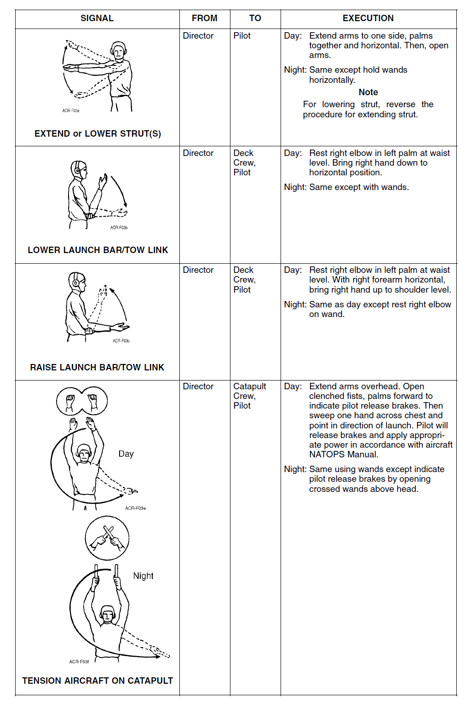
Ek B'nin her sayfası dört sütunlu bir tablodur: SIGNAL (işaretin çizimi ve adı), FROM (işareti veren), TO (işaretin verildiği kişi/ekip) ve EXECUTION (gündüz ve gece nasıl verildiği; bazı satırlarda Note, Remarks ya da WARNING). Bu sayfada dört işaret satırı var: EXTEND or LOWER STRUT(S), LOWER LAUNCH BAR/TOW LINK, RAISE LAUNCH BAR/TOW LINK ve TENSION AIRCRAFT ON CATAPULT (son satırda ayrı Day ve Night çizimleri vardır). Satırlar aşağıda ayrı bloklarda verilmiştir; işaret adları İngilizce korunmuştur. Gece işaretleri wand (gece işaret çubuğu) ile verilir; belgede kırmızı (RED) ve yeşil (GREEN) wand ayrı ayrı anılır.
- B-1.01Figure B-1 Flight Deck Signals 1
EXTEND or LOWER STRUT(S) — strut(lar)ı uzat ya da indir · Director → Pilot
- Gündüz: Kollarını bir yana uzatır, avuçlar birleşik ve yatay; sonra kollarını açar.
- Gece: Aynısı, ancak wand'lar yatay tutulur.
- Not: Strut'ı indirmek (lowering) için strut uzatma prosedürünün tersi uygulanır.
- B-1.F1[Figure B-1] SIGNAL: EXTEND or LOWER STRUT(S) | FROM: Director | TO: Pilot | Day: Extend arms to one side, palms together and horizontal. Then, open arms. | Night: Same except hold wands horizontally. | Note: For lowering strut, reverse the procedure for extending strut.
LOWER LAUNCH BAR/TOW LINK — launch bar'ı / tow link'i indir · Director → Deck Crew, Pilot
- Gündüz: Sağ dirseğini bel hizasında sol avucuna dayar; sağ elini aşağı, yatay konuma indirir.
- Gece: Aynısı, wand'larla.
- B-1.F2[Figure B-1] SIGNAL: LOWER LAUNCH BAR/TOW LINK | FROM: Director | TO: Deck Crew, Pilot | Day: Rest right elbow in left palm at waist level. Bring right hand down to horizontal position. | Night: Same except with wands.
RAISE LAUNCH BAR/TOW LINK — launch bar'ı / tow link'i kaldır · Director → Deck Crew, Pilot
- Gündüz: Sağ dirseğini bel hizasında sol avucuna dayar; sağ önkolu yatayken sağ elini omuz hizasına kaldırır.
- Gece: Gündüzle aynı, ancak sağ dirseğini wand'ın üzerine dayar.
- B-1.F3[Figure B-1] SIGNAL: RAISE LAUNCH BAR/TOW LINK | FROM: Director | TO: Deck Crew, Pilot | Day: Rest right elbow in left palm at waist level. With right forearm horizontal, bring right hand up to shoulder level. | Night: Same as day except rest right elbow on wand.
Bölüm 2'deki katapult işaret listesinde bu iki işaret "(a) Extend launch bar" ve "(g) Retract launch bar" adlarıyla geçer (2-7.01, 2-7.08); Ek B'de "LOWER LAUNCH BAR/TOW LINK" ve "RAISE LAUNCH BAR/TOW LINK" olarak adlandırılır. İndirme işaretinin tarifi iki yerde örtüşür ("brings right hand down to horizontal position"). Kaldırma işaretinde ise Bölüm 2 yatay uzanan kolun "raised to vertical" (dikeye kaldırıldığını), Ek B "bring right hand up to shoulder level" (sağ elin omuz hizasına kaldırıldığını) yazıyor.
- B-1.F2[Figure B-1] SIGNAL: LOWER LAUNCH BAR/TOW LINK | FROM: Director | TO: Deck Crew, Pilot | Day: Rest right elbow in left palm at waist level. Bring right hand down to horizontal position. | Night: Same except with wands.
- B-1.F3[Figure B-1] SIGNAL: RAISE LAUNCH BAR/TOW LINK | FROM: Director | TO: Deck Crew, Pilot | Day: Rest right elbow in left palm at waist level. With right forearm horizontal, bring right hand up to shoulder level. | Night: Same as day except rest right elbow on wand.
TENSION AIRCRAFT ON CATAPULT — uçağı katapultta gerdir · Director → Catapult Crew, Pilot
- Gündüz: Kollarını başının üstüne uzatır. Sıkılı yumruklarını avuçlar öne dönük açar: pilota "frenleri bırak" anlamındadır. Sonra bir elini göğsünün önünden geçirerek savurur ve kalkış yönünü gösterir. Pilot frenleri bırakır ve uçağın NATOPS Manual'ına göre uygun gücü uygular.
- Gece: Aynısı wand'larla; ancak "frenleri bırak" işareti, başın üstünde çapraz tutulan wand'lar açılarak verilir.
- B-1.F4[Figure B-1] SIGNAL: TENSION AIRCRAFT ON CATAPULT (drawings: Day, Night) | FROM: Director | TO: Catapult Crew, Pilot | Day: Extend arms overhead. Open clenched fists, palms forward to indicate pilot release brakes. Then sweep one hand across chest and point in direction of launch. Pilot will release brakes and apply appropriate power in accordance with aircraft NATOPS Manual. | Night: Same using wands except indicate pilot release brakes by opening crossed wands above head.
Bölüm 2'de (2-7.06, 2-7.07) yumruklar açıldıktan sonra "hand toward bow is swept down to a 45-degree position toward deck, while other hand is swept up 45 degrees toward sky" deniyor ve pilot "stays at idle awaiting runup signal". Ek B'de (B-1) ise "sweep one hand across chest and point in direction of launch" ve pilot "apply appropriate power in accordance with aircraft NATOPS Manual" yazıyor. İkinci el hareketi ve pilotun gerdirme sırasındaki güç ayarı iki yerde farklı anlatılıyor; güncel NATOPS / gemi prosedüründen doğrulayın.
- B-1.F4[Figure B-1] SIGNAL: TENSION AIRCRAFT ON CATAPULT (drawings: Day, Night) | FROM: Director | TO: Catapult Crew, Pilot | Day: Extend arms overhead. Open clenched fists, palms forward to indicate pilot release brakes. Then sweep one hand across chest and point in direction of launch. Pilot will release brakes and apply appropriate power in accordance with aircraft NATOPS Manual. | Night: Same using wands except indicate pilot release brakes by opening crossed wands above head.
Bölüm soruları
0 / 6EXTEND or LOWER STRUT(S) işaretini kim kime verir?
"FROM: Director | TO: Pilot". Gündüz: kollar bir yanda, avuçlar birleşik ve yatay; sonra kollar açılır.
Kaynak: s. B-1 (B-1.F1)
EXTEND or LOWER STRUT(S) satırındaki nota göre strut nasıl indirilir (lowering)?
"For lowering strut, reverse the procedure for extending strut." Gece işaret, wand'lar yatay tutularak verilir.
Kaynak: s. B-1 (B-1.F1)
RAISE LAUNCH BAR/TOW LINK işaretinin gece versiyonunu gündüzden ayıran nedir?
"Night: Same as day except rest right elbow on wand." Gündüz: sağ dirsek bel hizasında sol avuçta, sağ önkol yatayken sağ el omuz hizasına kaldırılır.
Kaynak: s. B-1 (B-1.F3)
Director sağ dirseğini bel hizasında sol avucuna dayayıp sağ elini aşağı, yatay konuma indiriyor. Ek B'ye göre bu hangi işarettir ve kime verilir?
RAISE LAUNCH BAR/TOW LINK'te ise sağ önkol yatayken sağ el omuz hizasına kaldırılır. Gece LOWER işareti aynı şekilde wand'larla verilir.
Kaynak: s. B-1 (B-1.F2, B-1.F3)
TENSION AIRCRAFT ON CATAPULT işaretinde gece "frenleri bırak" nasıl gösterilir?
"Night: Same using wands except indicate pilot release brakes by opening crossed wands above head." Gündüz: sıkılı yumruklar avuçlar öne dönük açılır.
Kaynak: s. B-1 (B-1.F4)
Ek B'deki TENSION AIRCRAFT ON CATAPULT satırına göre pilot ne yapar?
"Pilot will release brakes and apply appropriate power in accordance with aircraft NATOPS Manual." İşareti Director, Catapult Crew ve Pilot'a verir; sonra bir el göğüs önünden savrulup kalkış yönünü gösterir. (Bölüm 2'deki farklı ifade için kaynak notuna bakın.)
Kaynak: s. B-1 (B-1.F4)
B-2Gerdirmeyi kaldırma (untension) ve ilk turnup
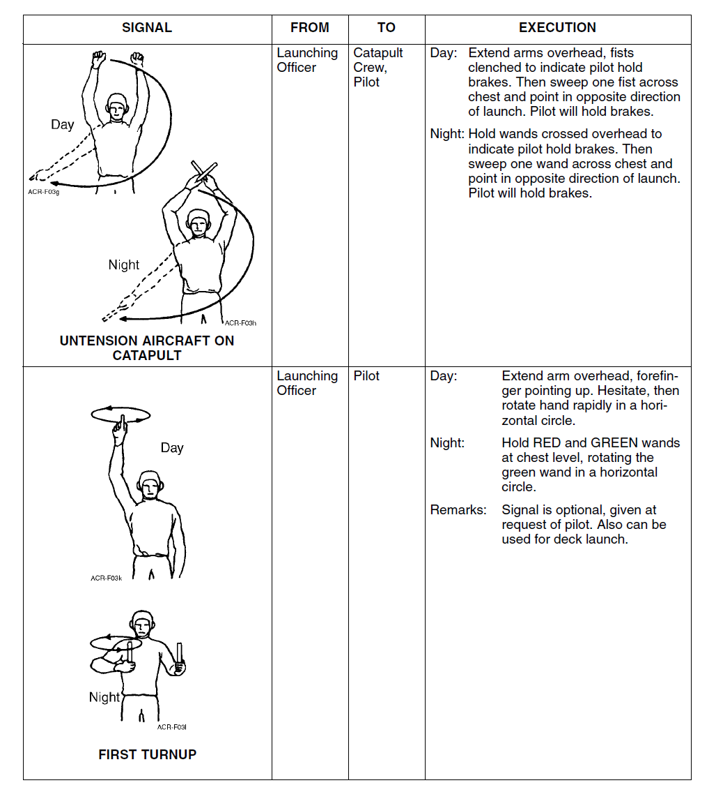
Şekilde: iki işaret satırı — UNTENSION AIRCRAFT ON CATAPULT ve FIRST TURNUP; her ikisinde de ayrı Day ve Night çizimleri vardır. Satırların ayrıntısı aşağıdadır.
- B-2.01Figure B-2 Flight Deck Signals 2
UNTENSION AIRCRAFT ON CATAPULT — katapultta gerdirmeyi kaldır · Launching Officer → Catapult Crew, Pilot
- Gündüz: Kollarını başının üstüne uzatır, yumruklar sıkılı: pilota "frenleri tut" anlamındadır. Sonra bir yumruğunu göğsünün önünden geçirerek savurur ve kalkış yönünün tersini gösterir. Pilot frenleri tutar.
- Gece: Wand'ları başının üstünde çapraz tutar: "frenleri tut". Sonra bir wand'ı göğsünün önünden geçirerek savurur ve kalkış yönünün tersini gösterir. Pilot frenleri tutar.
- B-2.F1[Figure B-2] SIGNAL: UNTENSION AIRCRAFT ON CATAPULT (drawings: Day, Night) | FROM: Launching Officer | TO: Catapult Crew, Pilot | Day: Extend arms overhead, fists clenched to indicate pilot hold brakes. Then sweep one fist across chest and point in opposite direction of launch. Pilot will hold brakes. | Night: Hold wands crossed overhead to indicate pilot hold brakes. Then sweep one wand across chest and point in opposite direction of launch. Pilot will hold brakes.
FIRST TURNUP — ilk motor güç artırımı · Launching Officer → Pilot
- Gündüz: Kolunu başının üstüne uzatır, işaret parmağı yukarıda. Bir an duraksar (hesitate), sonra elini hızla yatay bir daire çizerek döndürür.
- Gece: RED ve GREEN wand'ları göğüs hizasında tutar; GREEN wand'ı yatay bir daire çizerek döndürür.
- Remarks: İşaret isteğe bağlıdır (optional), pilotun isteği üzerine verilir. Deck launch için de kullanılabilir.
- B-2.F2[Figure B-2] SIGNAL: FIRST TURNUP (drawings: Day, Night) | FROM: Launching Officer | TO: Pilot | Day: Extend arm overhead, forefinger pointing up. Hesitate, then rotate hand rapidly in a horizontal circle. | Night: Hold RED and GREEN wands at chest level, rotating the green wand in a horizontal circle. | Remarks: Signal is optional, given at request of pilot. Also can be used for deck launch.
Bölüm soruları
0 / 4UNTENSION AIRCRAFT ON CATAPULT (B-2) işaretinde göğüs önünden savrulan yumruk / wand neyi gösterir?
"...sweep one fist across chest and point in opposite direction of launch. Pilot will hold brakes." İşaret Launching Officer'dan Catapult Crew ve Pilot'a verilir.
Kaynak: s. B-2 (B-2.F1)
UNTENSION AIRCRAFT ON CATAPULT (B-2) işaretinin ilk bölümü pilota ne bildirir ve gece nasıl verilir?
Gündüz: kollar başın üstünde, yumruklar sıkılı ("to indicate pilot hold brakes"). Gece: "Hold wands crossed overhead to indicate pilot hold brakes."
Kaynak: s. B-2 (B-2.F1)
FIRST TURNUP işareti hakkında hangisi doğrudur?
"Remarks: Signal is optional, given at request of pilot. Also can be used for deck launch." İşareti Launching Officer pilota verir.
Kaynak: s. B-2 (B-2.F2)
FIRST TURNUP gündüz ve gece nasıl verilir?
"Day: Extend arm overhead, forefinger pointing up. Hesitate, then rotate hand rapidly in a horizontal circle. Night: Hold RED and GREEN wands at chest level, rotating the green wand in a horizontal circle."
Kaynak: s. B-2 (B-2.F2)
B-3Afterburner ve kalkış (fire/launch) işaretleri
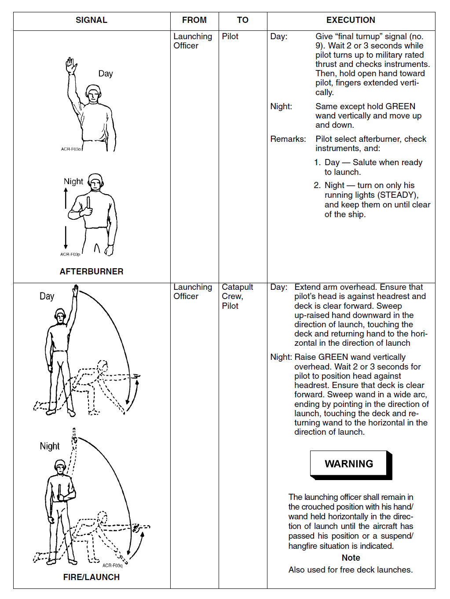
Şekilde: iki işaret satırı — AFTERBURNER ve FIRE/LAUNCH; her ikisinde de ayrı Day ve Night çizimleri vardır. FIRE/LAUNCH satırının EXECUTION sütununda bir WARNING kutusu ve bir Note bulunur. Satırların ayrıntısı aşağıdadır.
- B-3.01Figure B-3 Flight Deck Signals 3
AFTERBURNER · Launching Officer → Pilot
- Gündüz: "final turnup" işaretini verir (belgede "(no. 9)"). Pilot military rated thrust'a güç verip göstergeleri kontrol ederken 2 veya 3 saniye bekler. Sonra açık elini, parmaklar dikey uzanmış olarak pilota doğru tutar.
- Gece: Aynısı; ancak GREEN wand dikey tutulur ve yukarı-aşağı hareket ettirilir.
- Remarks: Pilot afterburner'ı seçer, göstergeleri kontrol eder ve:
- Gündüz — kalkışa hazır olduğunda selam verir.
- Gece — yalnızca running lights'ını yakar (STEADY, sabit) ve gemiden uzaklaşana kadar (until clear of the ship) açık tutar.
- B-3.F1[Figure B-3] SIGNAL: AFTERBURNER (drawings: Day, Night) | FROM: Launching Officer | TO: Pilot | Day: Give "final turnup" signal (no. 9). Wait 2 or 3 seconds while pilot turns up to military rated thrust and checks instruments. Then, hold open hand toward pilot, fingers extended vertically. | Night: Same except hold GREEN wand vertically and move up and down. | Remarks: Pilot select afterburner, check instruments, and: 1. Day — Salute when ready to launch. 2. Night — turn on only his running lights (STEADY), and keep them on until clear of the ship.
Bölüm 2'deki "(h) Engine runup" işaretini (2-7.09, 2-7.10) Catapult Officer/CSPO verir: "makes circular motion with index and middle finger at head level"; pilot gücü MRT'ye getirir. Ek B'deki FIRST TURNUP (B-2) ise Launching Officer tarafından "forefinger pointing up … rotate hand rapidly in a horizontal circle" biçiminde verilir ve "Signal is optional, given at request of pilot" notunu taşır. AFTERBURNER satırı önce "final turnup signal (no. 9)" verilmesini ister; ancak B-1 – B-6 sayfalarında "final turnup" adlı bir işaret yoktur ve bu sayfalardaki işaretler numarasızdır (sırayla sayıldığında 9. işaret SUSPEND'dir). Bölüm 2'deki run-up işaretinin Ek B'deki karşılığı belgede açıkça belirtilmiyor.
- B-2.F2[Figure B-2] SIGNAL: FIRST TURNUP (drawings: Day, Night) | FROM: Launching Officer | TO: Pilot | Day: Extend arm overhead, forefinger pointing up. Hesitate, then rotate hand rapidly in a horizontal circle. | Night: Hold RED and GREEN wands at chest level, rotating the green wand in a horizontal circle. | Remarks: Signal is optional, given at request of pilot. Also can be used for deck launch.
- B-3.F1[Figure B-3] SIGNAL: AFTERBURNER (drawings: Day, Night) | FROM: Launching Officer | TO: Pilot | Day: Give "final turnup" signal (no. 9). Wait 2 or 3 seconds while pilot turns up to military rated thrust and checks instruments. Then, hold open hand toward pilot, fingers extended vertically. | Night: Same except hold GREEN wand vertically and move up and down. | Remarks: Pilot select afterburner, check instruments, and: 1. Day — Salute when ready to launch. 2. Night — turn on only his running lights (STEADY), and keep them on until clear of the ship.
Bölüm 2'de (2-9.08) gece pilotun selamı yerine "aircraft external lights are turned on meaning the same as the daytime hand salute" deniyor. Ek B'deki AFTERBURNER satırında ise gece pilotun "turn on only his running lights (STEADY), and keep them on until clear of the ship" yapması isteniyor. Hangi dış ışıkların yakılacağı iki yerde farklı ayrıntıyla veriliyor.
- B-3.F1[Figure B-3] SIGNAL: AFTERBURNER (drawings: Day, Night) | FROM: Launching Officer | TO: Pilot | Day: Give "final turnup" signal (no. 9). Wait 2 or 3 seconds while pilot turns up to military rated thrust and checks instruments. Then, hold open hand toward pilot, fingers extended vertically. | Night: Same except hold GREEN wand vertically and move up and down. | Remarks: Pilot select afterburner, check instruments, and: 1. Day — Salute when ready to launch. 2. Night — turn on only his running lights (STEADY), and keep them on until clear of the ship.
FIRE/LAUNCH — ateşle / kalkış · Launching Officer → Catapult Crew, Pilot
- Gündüz: Kolunu başının üstüne uzatır. Pilotun başının headrest'e dayalı olduğundan ve güvertenin ileride boş (deck is clear forward) olduğundan emin olur. Yukarı kaldırılmış elini kalkış yönünde aşağı savurur, güverteye dokunur ve elini kalkış yönünde yatay konuma getirir.
- Gece: GREEN wand'ı dikey olarak başının üstüne kaldırır. Pilotun başını headrest'e yerleştirmesi için 2 veya 3 saniye bekler. Güvertenin ileride boş olduğundan emin olur. Wand'ı geniş bir yay çizerek savurur; kalkış yönünü göstererek bitirir, güverteye dokunur ve wand'ı kalkış yönünde yatay konuma getirir.
- Not: Bu işaret free deck launch'larda da kullanılır.
- B-3.F2[Figure B-3] SIGNAL: FIRE/LAUNCH (drawings: Day, Night) | FROM: Launching Officer | TO: Catapult Crew, Pilot | Day: Extend arm overhead. Ensure that pilot's head is against headrest and deck is clear forward. Sweep up-raised hand downward in the direction of launch, touching the deck and returning hand to the horizontal in the direction of launch | Night: Raise GREEN wand vertically overhead. Wait 2 or 3 seconds for pilot to position head against headrest. Ensure that deck is clear forward. Sweep wand in a wide arc, ending by pointing in the direction of launch, touching the deck and returning wand to the horizontal in the direction of launch. | WARNING: The launching officer shall remain in the crouched position with his hand/wand held horizontally in the direction of launch until the aircraft has passed his position or a suspend/hangfire situation is indicated. | Note: Also used for free deck launches.
Launching officer, uçak onun konumunu geçene ya da bir suspend/hangfire durumu belirtilene kadar, eli/wand'ı kalkış yönünde yatay tutarak çömelmiş (crouched) konumda kalmalıdır.
- B-3.F2[Figure B-3] SIGNAL: FIRE/LAUNCH (drawings: Day, Night) | FROM: Launching Officer | TO: Catapult Crew, Pilot | Day: Extend arm overhead. Ensure that pilot's head is against headrest and deck is clear forward. Sweep up-raised hand downward in the direction of launch, touching the deck and returning hand to the horizontal in the direction of launch | Night: Raise GREEN wand vertically overhead. Wait 2 or 3 seconds for pilot to position head against headrest. Ensure that deck is clear forward. Sweep wand in a wide arc, ending by pointing in the direction of launch, touching the deck and returning wand to the horizontal in the direction of launch. | WARNING: The launching officer shall remain in the crouched position with his hand/wand held horizontally in the direction of launch until the aircraft has passed his position or a suspend/hangfire situation is indicated. | Note: Also used for free deck launches.
Bölüm soruları
0 / 5AFTERBURNER işaretinde "final turnup" işaretinden sonra ne kadar beklenir ve bu sırada pilot ne yapar?
"Wait 2 or 3 seconds while pilot turns up to military rated thrust and checks instruments. Then, hold open hand toward pilot, fingers extended vertically." Gece: GREEN wand dikey tutulup yukarı-aşağı hareket ettirilir.
Kaynak: s. B-3 (B-3.F1)
AFTERBURNER satırının Remarks'ına göre pilot gece kalkışa hazır olduğunu nasıl bildirir?
Pilot afterburner'ı seçer, göstergeleri kontrol eder; gündüz kalkışa hazır olunca selam verir, gece "turn on only his running lights (STEADY), and keep them on until clear of the ship".
Kaynak: s. B-3 (B-3.F1)
FIRE/LAUNCH WARNING'ine göre launching officer çömelmiş konumda ne zamana kadar kalır?
Eli/wand'ı kalkış yönünde yatay tutarak "until the aircraft has passed his position or a suspend/hangfire situation is indicated".
Kaynak: s. B-3 (B-3.F2)
FIRE/LAUNCH işaretinin gece versiyonu için hangisi doğrudur?
Ardından güvertenin ileride boş olduğundan emin olunur, wand geniş yay çizerek savrulur, kalkış yönünü gösterip güverteye dokunur ve yatay konuma döner. Not: işaret free deck launch'larda da kullanılır.
Kaynak: s. B-3 (B-3.F2)
FIRE/LAUNCH işaretinin gündüz versiyonunda launching officer elini savurmadan önce neden emin olur?
"Extend arm overhead. Ensure that pilot's head is against headrest and deck is clear forward. Sweep up-raised hand downward in the direction of launch, touching the deck and returning hand to the horizontal in the direction of launch."
Kaynak: s. B-3 (B-3.F2)
B-4Kalkışı durdurma: suspend ve hangfire
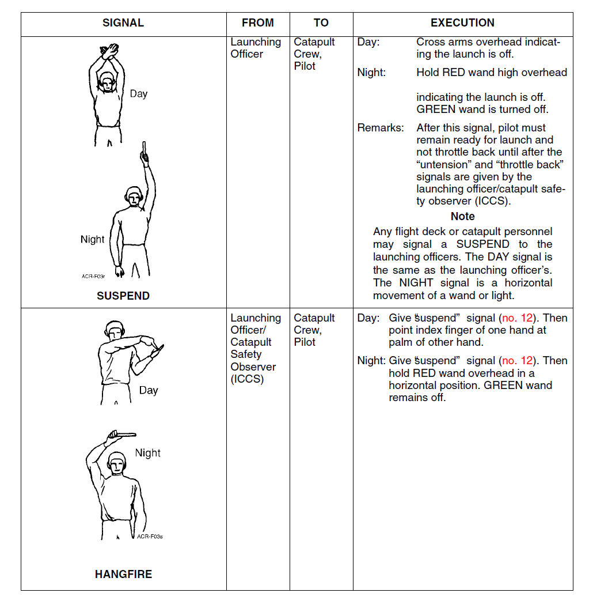
Şekilde: iki işaret satırı — SUSPEND ve HANGFIRE; her ikisinde de ayrı Day ve Night çizimleri vardır. SUSPEND satırında Remarks ve Note bulunur. Satırların ayrıntısı aşağıdadır.
- B-4.01Figure B-4 Flight Deck Signals 4
SUSPEND — kalkışı askıya al · Launching Officer → Catapult Crew, Pilot
- Gündüz: Kollarını başının üstünde çaprazlar: kalkış iptal (the launch is off).
- Gece: RED wand'ı başının üstünde yüksekte tutar: kalkış iptal. GREEN wand kapatılır.
- Remarks: Bu işaretten sonra pilot kalkışa hazır kalmalı ve launching officer / catapult safety observer (ICCS) "untension" ve "throttle back" işaretlerini verene kadar gazı geri almamalıdır.
- B-4.F1[Figure B-4] SIGNAL: SUSPEND (drawings: Day, Night) | FROM: Launching Officer | TO: Catapult Crew, Pilot | Day: Cross arms overhead indicating the launch is off. | Night: Hold RED wand high overhead indicating the launch is off. GREEN wand is turned off. | Remarks: After this signal, pilot must remain ready for launch and not throttle back until after the "untension" and "throttle back" signals are given by the launching officer/catapult safety observer (ICCS). | Note: Any flight deck or catapult personnel may signal a SUSPEND to the launching officers. The DAY signal is the same as the launching officer's. The NIGHT signal is a horizontal movement of a wand or light.
Herhangi bir uçuş güvertesi ya da katapult personeli, launching officer'lara SUSPEND işareti verebilir. Gündüz işareti launching officer'ınkiyle aynıdır. Gece işareti bir wand'ın ya da ışığın yatay hareketidir.
- B-4.F1[Figure B-4] SIGNAL: SUSPEND (drawings: Day, Night) | FROM: Launching Officer | TO: Catapult Crew, Pilot | Day: Cross arms overhead indicating the launch is off. | Night: Hold RED wand high overhead indicating the launch is off. GREEN wand is turned off. | Remarks: After this signal, pilot must remain ready for launch and not throttle back until after the "untension" and "throttle back" signals are given by the launching officer/catapult safety observer (ICCS). | Note: Any flight deck or catapult personnel may signal a SUSPEND to the launching officers. The DAY signal is the same as the launching officer's. The NIGHT signal is a horizontal movement of a wand or light.
Bölüm 2'deki WARNING (2-8.02): "Do not throttle back until the catapult officer walks in front of the aircraft and gives the throttle back signal during suspended launches." Ek B (SUSPEND, Remarks): "not throttle back until after the 'untension' and 'throttle back' signals are given by the launching officer/catapult safety observer (ICCS)". Ek B ayrıca untension işaretini şart koşuyor ve işareti verenleri farklı adlandırıyor; Bölüm 2 ise subayın uçağın önüne yürümesini belirtiyor.
- B-4.F1[Figure B-4] SIGNAL: SUSPEND (drawings: Day, Night) | FROM: Launching Officer | TO: Catapult Crew, Pilot | Day: Cross arms overhead indicating the launch is off. | Night: Hold RED wand high overhead indicating the launch is off. GREEN wand is turned off. | Remarks: After this signal, pilot must remain ready for launch and not throttle back until after the "untension" and "throttle back" signals are given by the launching officer/catapult safety observer (ICCS). | Note: Any flight deck or catapult personnel may signal a SUSPEND to the launching officers. The DAY signal is the same as the launching officer's. The NIGHT signal is a horizontal movement of a wand or light.
HANGFIRE · Launching Officer / Catapult Safety Observer (ICCS) → Catapult Crew, Pilot
- Gündüz: Önce "suspend" işaretini verir (belgede "(no. 12)"). Sonra bir elinin işaret parmağıyla diğer elinin avucunu gösterir.
- Gece: Önce "suspend" işaretini verir (belgede "(no. 12)"). Sonra RED wand'ı başının üstünde yatay konumda tutar. GREEN wand kapalı kalır.
- B-4.F2[Figure B-4] SIGNAL: HANGFIRE (drawings: Day, Night) | FROM: Launching Officer/Catapult Safety Observer (ICCS) | TO: Catapult Crew, Pilot | Day: Give "suspend" signal (no. 12). Then point index finger of one hand at palm of other hand. | Night: Give "suspend" signal (no. 12). Then hold RED wand overhead in a horizontal position. GREEN wand remains off.
Bölüm 2'deki "(k) Hang fire" (2-7.13): Catapult Officer/CSPO "extends right-hand index finger overhead and points horizontally at left palm extended vertically". Ek B'de işareti Launching Officer/Catapult Safety Observer (ICCS) verir; önce "suspend" işareti verilir, sonra "point index finger of one hand at palm of other hand" (sağ/sol el belirtilmez). Görevli adları da farklıdır: Bölüm 2 "Catapult Officer/CSPO", Ek B "Launching Officer", "Catapult Safety Observer (ICCS)" ve (B-6'da) "Catapult Officer" diyor; belge bunların ilişkisini açıklamıyor. Ayrıca "suspend signal (no. 12)" atfı bu sayfalarla örtüşmüyor: B-1 – B-6'daki işaretler numarasızdır ve sırayla sayıldığında 12. işaret THROTTLE BACK, SUSPEND ise 9.'dur.
- B-4.F2[Figure B-4] SIGNAL: HANGFIRE (drawings: Day, Night) | FROM: Launching Officer/Catapult Safety Observer (ICCS) | TO: Catapult Crew, Pilot | Day: Give "suspend" signal (no. 12). Then point index finger of one hand at palm of other hand. | Night: Give "suspend" signal (no. 12). Then hold RED wand overhead in a horizontal position. GREEN wand remains off.
Bölüm soruları
0 / 4SUSPEND işaretinden sonra pilot gazı ne zaman geri alabilir?
"After this signal, pilot must remain ready for launch and not throttle back until after the 'untension' and 'throttle back' signals are given..."
Kaynak: s. B-4 (B-4.F1)
SUSPEND satırındaki nota göre aşağıdakilerden hangisi doğrudur?
"The DAY signal is the same as the launching officer's. The NIGHT signal is a horizontal movement of a wand or light."
Kaynak: s. B-4 (B-4.F1)
Launching officer'ın gece SUSPEND işareti nasıldır?
Gündüz: kollar başın üstünde çaprazlanır ("the launch is off"). Başın üstünde YATAY RED wand ise HANGFIRE'ın gece işaretidir.
Kaynak: s. B-4 (B-4.F1, B-4.F2)
HANGFIRE işareti gündüz nasıl verilir?
HANGFIRE'ı Launching Officer / Catapult Safety Observer (ICCS), Catapult Crew ve Pilot'a verir. Gece: suspend işaretinden sonra RED wand başın üstünde yatay tutulur, GREEN wand kapalı kalır.
Kaynak: s. B-4 (B-4.F2)
B-5Suspend / hangfire sonrası: untension, throttle back ve push/pull back
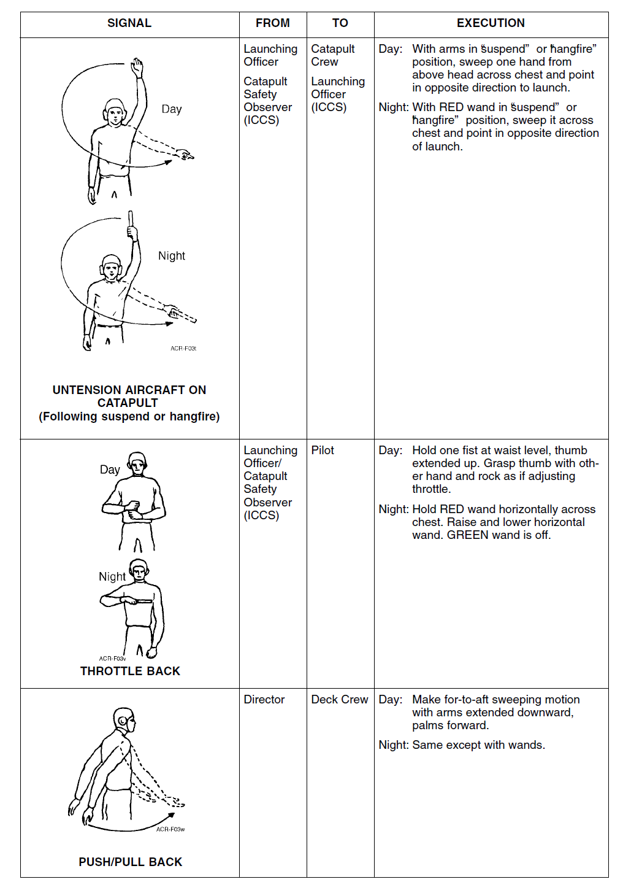
Şekilde: üç işaret satırı — UNTENSION AIRCRAFT ON CATAPULT (Following suspend or hangfire), THROTTLE BACK (ikisinde de Day ve Night çizimleri) ve PUSH/PULL BACK. Satırların ayrıntısı aşağıdadır.
- B-5.01Figure B-5 Flight Deck Signals 5
UNTENSION AIRCRAFT ON CATAPULT (Following suspend or hangfire) — suspend ya da hangfire'dan sonra gerdirmeyi kaldır
- Veren → alan: FROM ve TO sütunlarında iki satır yan yana basılıdır: Launching Officer → Catapult Crew ve Catapult Safety Observer (ICCS) → Launching Officer (ICCS). (B-2'deki untension'dan farklı olarak TO sütununda Pilot yoktur.)
- Gündüz: Kollar "suspend" ya da "hangfire" konumundayken bir elini başının üstünden göğsünün önüne doğru savurur ve kalkış yönünün tersini gösterir.
- Gece: RED wand "suspend" ya da "hangfire" konumundayken onu göğsünün önünden geçirerek savurur ve kalkış yönünün tersini gösterir.
- B-5.F1[Figure B-5] SIGNAL: UNTENSION AIRCRAFT ON CATAPULT (Following suspend or hangfire) (drawings: Day, Night) | FROM: Launching Officer; Catapult Safety Observer (ICCS) | TO: Catapult Crew; Launching Officer (ICCS) (printed as two lines side by side: Launching Officer - Catapult Crew, Catapult Safety Observer (ICCS) - Launching Officer (ICCS)) | Day: With arms in "suspend" or "hangfire" position, sweep one hand from above head across chest and point in opposite direction to launch. | Night: With RED wand in "suspend" or "hangfire" position, sweep it across chest and point in opposite direction of launch.
THROTTLE BACK — gazı geri al · Launching Officer / Catapult Safety Observer (ICCS) → Pilot
- Gündüz: Bir yumruğunu bel hizasında, başparmak yukarı tutar. Diğer eliyle başparmağı kavrar ve throttle ayarlıyormuş gibi sallar (rock).
- Gece: RED wand'ı göğsünün önünde yatay tutar; yatay wand'ı kaldırıp indirir. GREEN wand kapalıdır.
- B-5.F2[Figure B-5] SIGNAL: THROTTLE BACK (drawings: Day, Night) | FROM: Launching Officer/Catapult Safety Observer (ICCS) | TO: Pilot | Day: Hold one fist at waist level, thumb extended up. Grasp thumb with other hand and rock as if adjusting throttle. | Night: Hold RED wand horizontally across chest. Raise and lower horizontal wand. GREEN wand is off.
PUSH/PULL BACK — geri it / geri çek · Director → Deck Crew
- Gündüz: Kollar aşağı uzanmış, avuçlar öne dönük; ileriden geriye (belgede "for-to-aft") süpürme hareketi yapar.
- Gece: Aynısı, wand'larla.
- B-5.F3[Figure B-5] SIGNAL: PUSH/PULL BACK | FROM: Director | TO: Deck Crew | Day: Make for-to-aft sweeping motion with arms extended downward, palms forward. | Night: Same except with wands.
PUSH/PULL BACK satırında "Make for-to-aft sweeping motion" yazıyor. İfade büyük olasılıkla "fore-to-aft" (ileriden geriye) anlamındadır; çeviri bu anlamla yapıldı.
- B-5.F3[Figure B-5] SIGNAL: PUSH/PULL BACK | FROM: Director | TO: Deck Crew | Day: Make for-to-aft sweeping motion with arms extended downward, palms forward. | Night: Same except with wands.
Bölüm soruları
0 / 4Suspend ya da hangfire'dan sonraki UNTENSION işaretinde Catapult Safety Observer (ICCS) işareti kime verir?
FROM/TO sütunlarında iki satır yan yana: Launching Officer → Catapult Crew; Catapult Safety Observer (ICCS) → Launching Officer (ICCS). TO sütununda Pilot yoktur.
Kaynak: s. B-5 (B-5.F1)
Suspend / hangfire sonrası UNTENSION işareti nasıl verilir?
Day: "With arms in 'suspend' or 'hangfire' position, sweep one hand from above head across chest and point in opposite direction to launch." Night: aynı hareket RED wand ile.
Kaynak: s. B-5 (B-5.F1)
THROTTLE BACK işaretinin gece versiyonu hangisidir?
Gündüz: bir yumruk bel hizasında, başparmak yukarı; diğer el başparmağı kavrayıp throttle ayarlıyormuş gibi sallar. İşareti Launching Officer / Catapult Safety Observer (ICCS) pilota verir.
Kaynak: s. B-5 (B-5.F2)
PUSH/PULL BACK işaretini kim kime verir ve gündüz nasıl yapılır?
"Make for-to-aft sweeping motion with arms extended downward, palms forward." Gece: aynısı wand'larla.
Kaynak: s. B-5 (B-5.F3)
B-6Kontrol devri ve shuttle işaretleri
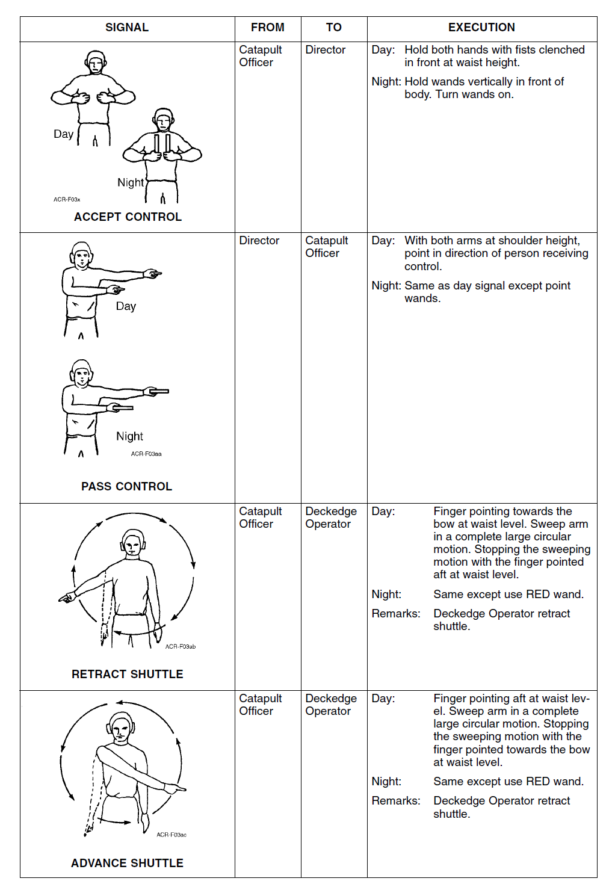
Şekilde: dört işaret satırı — ACCEPT CONTROL, PASS CONTROL (ikisinde de Day ve Night çizimleri), RETRACT SHUTTLE ve ADVANCE SHUTTLE (shuttle çizimlerinde kolun çizdiği daire oklarla gösterilir). Satırların ayrıntısı aşağıdadır.
- B-6.01Figure B-6 Flight Deck Signals 6
ACCEPT CONTROL — kontrolü kabul et · Catapult Officer → Director
- Gündüz: İki elini yumruk sıkılı olarak önde, bel yüksekliğinde tutar.
- Gece: Wand'ları vücudunun önünde dikey tutar; wand'ları yakar (turn wands on).
- B-6.F1[Figure B-6] SIGNAL: ACCEPT CONTROL (drawings: Day, Night) | FROM: Catapult Officer | TO: Director | Day: Hold both hands with fists clenched in front at waist height. | Night: Hold wands vertically in front of body. Turn wands on.
PASS CONTROL — kontrolü devret · Director → Catapult Officer
- Gündüz: İki kolu omuz hizasında, kontrolü alacak kişinin yönünü gösterir.
- Gece: Gündüz işaretiyle aynı, ancak wand'larla gösterir.
- B-6.F2[Figure B-6] SIGNAL: PASS CONTROL (drawings: Day, Night) | FROM: Director | TO: Catapult Officer | Day: With both arms at shoulder height, point in direction of person receiving control. | Night: Same as day signal except point wands.
RETRACT SHUTTLE — shuttle'ı geri çek · Catapult Officer → Deckedge Operator
- Gündüz: Parmak bel hizasında pruvayı (bow) gösterir. Kol tam ve büyük bir dairesel hareketle savrulur. Süpürme hareketi, parmak bel hizasında kıçı (aft) gösterirken durdurulur.
- Gece: Aynısı, RED wand kullanılır.
- Remarks: Deckedge Operator shuttle'ı geri çeker (retract shuttle).
- B-6.F3[Figure B-6] SIGNAL: RETRACT SHUTTLE | FROM: Catapult Officer | TO: Deckedge Operator | Day: Finger pointing towards the bow at waist level. Sweep arm in a complete large circular motion. Stopping the sweeping motion with the finger pointed aft at waist level. | Night: Same except use RED wand. | Remarks: Deckedge Operator retract shuttle.
ADVANCE SHUTTLE — shuttle'ı ileri al · Catapult Officer → Deckedge Operator
- Gündüz: Parmak bel hizasında kıçı (aft) gösterir. Kol tam ve büyük bir dairesel hareketle savrulur. Süpürme hareketi, parmak bel hizasında pruvayı (bow) gösterirken durdurulur (RETRACT SHUTTLE'ın tersi).
- Gece: Aynısı, RED wand kullanılır.
- Remarks: Belgede "Deckedge Operator retract shuttle." yazıyor (aşağıdaki kaynak notuna bakın).
- B-6.F4[Figure B-6] SIGNAL: ADVANCE SHUTTLE | FROM: Catapult Officer | TO: Deckedge Operator | Day: Finger pointing aft at waist level. Sweep arm in a complete large circular motion. Stopping the sweeping motion with the finger pointed towards the bow at waist level. | Night: Same except use RED wand. | Remarks: Deckedge Operator retract shuttle.
ADVANCE SHUTTLE satırının Remarks'ı, RETRACT SHUTTLE satırınınkiyle birebir aynıdır: "Deckedge Operator retract shuttle." İşaretin adı ve tarifi shuttle'ın ileri alınmasını (advance) anlatırken not "retract" diyor; büyük olasılıkla önceki satırdan kopyalanmış bir hatadır. Orijinal kaynaktan doğrulayın.
- B-6.F4[Figure B-6] SIGNAL: ADVANCE SHUTTLE | FROM: Catapult Officer | TO: Deckedge Operator | Day: Finger pointing aft at waist level. Sweep arm in a complete large circular motion. Stopping the sweeping motion with the finger pointed towards the bow at waist level. | Night: Same except use RED wand. | Remarks: Deckedge Operator retract shuttle.
İşaret tanıma alıştırması (B-1 – B-6)
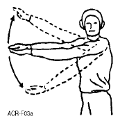
Bu hangi işaret? (1–4 tuşlarıyla da seçebilirsiniz)
Çizimler s. B-1 – B-6'daki tablolardan kırpılmıştır; işaretin adı gizlenmiştir. Şıklar bu sayfalardaki 17 işaretin adlarından seçilir. Cevaptan sonra işareti kimin kime verdiği ve gündüz/gece uygulaması gösterilir. Metinler belgedeki EXECUTION sütununun Türkçesidir.
- B-1.F1[Figure B-1] SIGNAL: EXTEND or LOWER STRUT(S) | FROM: Director | TO: Pilot | Day: Extend arms to one side, palms together and horizontal. Then, open arms. | Night: Same except hold wands horizontally. | Note: For lowering strut, reverse the procedure for extending strut.
- B-1.F2[Figure B-1] SIGNAL: LOWER LAUNCH BAR/TOW LINK | FROM: Director | TO: Deck Crew, Pilot | Day: Rest right elbow in left palm at waist level. Bring right hand down to horizontal position. | Night: Same except with wands.
- B-1.F3[Figure B-1] SIGNAL: RAISE LAUNCH BAR/TOW LINK | FROM: Director | TO: Deck Crew, Pilot | Day: Rest right elbow in left palm at waist level. With right forearm horizontal, bring right hand up to shoulder level. | Night: Same as day except rest right elbow on wand.
- B-1.F4[Figure B-1] SIGNAL: TENSION AIRCRAFT ON CATAPULT (drawings: Day, Night) | FROM: Director | TO: Catapult Crew, Pilot | Day: Extend arms overhead. Open clenched fists, palms forward to indicate pilot release brakes. Then sweep one hand across chest and point in direction of launch. Pilot will release brakes and apply appropriate power in accordance with aircraft NATOPS Manual. | Night: Same using wands except indicate pilot release brakes by opening crossed wands above head.
- B-2.F1[Figure B-2] SIGNAL: UNTENSION AIRCRAFT ON CATAPULT (drawings: Day, Night) | FROM: Launching Officer | TO: Catapult Crew, Pilot | Day: Extend arms overhead, fists clenched to indicate pilot hold brakes. Then sweep one fist across chest and point in opposite direction of launch. Pilot will hold brakes. | Night: Hold wands crossed overhead to indicate pilot hold brakes. Then sweep one wand across chest and point in opposite direction of launch. Pilot will hold brakes.
- B-2.F2[Figure B-2] SIGNAL: FIRST TURNUP (drawings: Day, Night) | FROM: Launching Officer | TO: Pilot | Day: Extend arm overhead, forefinger pointing up. Hesitate, then rotate hand rapidly in a horizontal circle. | Night: Hold RED and GREEN wands at chest level, rotating the green wand in a horizontal circle. | Remarks: Signal is optional, given at request of pilot. Also can be used for deck launch.
- B-3.F1[Figure B-3] SIGNAL: AFTERBURNER (drawings: Day, Night) | FROM: Launching Officer | TO: Pilot | Day: Give "final turnup" signal (no. 9). Wait 2 or 3 seconds while pilot turns up to military rated thrust and checks instruments. Then, hold open hand toward pilot, fingers extended vertically. | Night: Same except hold GREEN wand vertically and move up and down. | Remarks: Pilot select afterburner, check instruments, and: 1. Day — Salute when ready to launch. 2. Night — turn on only his running lights (STEADY), and keep them on until clear of the ship.
- B-3.F2[Figure B-3] SIGNAL: FIRE/LAUNCH (drawings: Day, Night) | FROM: Launching Officer | TO: Catapult Crew, Pilot | Day: Extend arm overhead. Ensure that pilot's head is against headrest and deck is clear forward. Sweep up-raised hand downward in the direction of launch, touching the deck and returning hand to the horizontal in the direction of launch | Night: Raise GREEN wand vertically overhead. Wait 2 or 3 seconds for pilot to position head against headrest. Ensure that deck is clear forward. Sweep wand in a wide arc, ending by pointing in the direction of launch, touching the deck and returning wand to the horizontal in the direction of launch. | WARNING: The launching officer shall remain in the crouched position with his hand/wand held horizontally in the direction of launch until the aircraft has passed his position or a suspend/hangfire situation is indicated. | Note: Also used for free deck launches.
- B-4.F1[Figure B-4] SIGNAL: SUSPEND (drawings: Day, Night) | FROM: Launching Officer | TO: Catapult Crew, Pilot | Day: Cross arms overhead indicating the launch is off. | Night: Hold RED wand high overhead indicating the launch is off. GREEN wand is turned off. | Remarks: After this signal, pilot must remain ready for launch and not throttle back until after the "untension" and "throttle back" signals are given by the launching officer/catapult safety observer (ICCS). | Note: Any flight deck or catapult personnel may signal a SUSPEND to the launching officers. The DAY signal is the same as the launching officer's. The NIGHT signal is a horizontal movement of a wand or light.
- B-4.F2[Figure B-4] SIGNAL: HANGFIRE (drawings: Day, Night) | FROM: Launching Officer/Catapult Safety Observer (ICCS) | TO: Catapult Crew, Pilot | Day: Give "suspend" signal (no. 12). Then point index finger of one hand at palm of other hand. | Night: Give "suspend" signal (no. 12). Then hold RED wand overhead in a horizontal position. GREEN wand remains off.
- B-5.F1[Figure B-5] SIGNAL: UNTENSION AIRCRAFT ON CATAPULT (Following suspend or hangfire) (drawings: Day, Night) | FROM: Launching Officer; Catapult Safety Observer (ICCS) | TO: Catapult Crew; Launching Officer (ICCS) (printed as two lines side by side: Launching Officer - Catapult Crew, Catapult Safety Observer (ICCS) - Launching Officer (ICCS)) | Day: With arms in "suspend" or "hangfire" position, sweep one hand from above head across chest and point in opposite direction to launch. | Night: With RED wand in "suspend" or "hangfire" position, sweep it across chest and point in opposite direction of launch.
- B-5.F2[Figure B-5] SIGNAL: THROTTLE BACK (drawings: Day, Night) | FROM: Launching Officer/Catapult Safety Observer (ICCS) | TO: Pilot | Day: Hold one fist at waist level, thumb extended up. Grasp thumb with other hand and rock as if adjusting throttle. | Night: Hold RED wand horizontally across chest. Raise and lower horizontal wand. GREEN wand is off.
- B-5.F3[Figure B-5] SIGNAL: PUSH/PULL BACK | FROM: Director | TO: Deck Crew | Day: Make for-to-aft sweeping motion with arms extended downward, palms forward. | Night: Same except with wands.
- B-6.F1[Figure B-6] SIGNAL: ACCEPT CONTROL (drawings: Day, Night) | FROM: Catapult Officer | TO: Director | Day: Hold both hands with fists clenched in front at waist height. | Night: Hold wands vertically in front of body. Turn wands on.
- B-6.F2[Figure B-6] SIGNAL: PASS CONTROL (drawings: Day, Night) | FROM: Director | TO: Catapult Officer | Day: With both arms at shoulder height, point in direction of person receiving control. | Night: Same as day signal except point wands.
- B-6.F3[Figure B-6] SIGNAL: RETRACT SHUTTLE | FROM: Catapult Officer | TO: Deckedge Operator | Day: Finger pointing towards the bow at waist level. Sweep arm in a complete large circular motion. Stopping the sweeping motion with the finger pointed aft at waist level. | Night: Same except use RED wand. | Remarks: Deckedge Operator retract shuttle.
- B-6.F4[Figure B-6] SIGNAL: ADVANCE SHUTTLE | FROM: Catapult Officer | TO: Deckedge Operator | Day: Finger pointing aft at waist level. Sweep arm in a complete large circular motion. Stopping the sweeping motion with the finger pointed towards the bow at waist level. | Night: Same except use RED wand. | Remarks: Deckedge Operator retract shuttle.
Bölüm soruları
0 / 4ACCEPT CONTROL işaretini kim kime verir?
Gündüz: iki el yumruk sıkılı, önde bel yüksekliğinde. Gece: wand'lar vücudun önünde dikey tutulur ve yakılır. Tersi yönde PASS CONTROL'ü Director, Catapult Officer'a verir.
Kaynak: s. B-6 (B-6.F1, B-6.F2)
PASS CONTROL işareti gündüz nasıl verilir?
"With both arms at shoulder height, point in direction of person receiving control." Gece: aynısı, wand'larla gösterilir.
Kaynak: s. B-6 (B-6.F2)
RETRACT SHUTTLE işaretinde hareket nerede başlar ve nerede biter?
ADVANCE SHUTTLE'da yön terstir: aft'tan başlar, pruvayı gösterirken durur. Remarks: "Deckedge Operator retract shuttle."
Kaynak: s. B-6 (B-6.F3, B-6.F4)
RETRACT SHUTTLE ve ADVANCE SHUTTLE işaretleri kime verilir ve gece nasıl yapılır?
Her iki işareti Catapult Officer, Deckedge Operator'a verir; "Night: Same except use RED wand."
Kaynak: s. B-6 (B-6.F3, B-6.F4)
B-7Güverte durumu ve geri çekme (Clear Deck, Foul Deck, Pull Back)
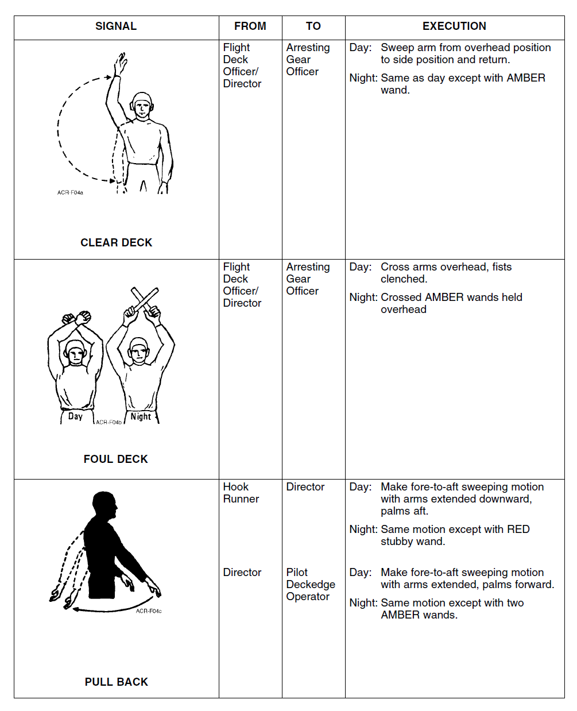
Ek B'nin diğer sayfaları gibi bu sayfa da bir tablodur: SIGNAL (işaretin çizimi ve adı), FROM (işareti veren), TO (işareti alan) ve EXECUTION (uygulama; Day = gündüz, Night = gece). Bu sayfada üç işaret vardır: CLEAR DECK, FOUL DECK ve PULL BACK.
- B-7.01Figure B-7 Flight Deck Signals 7
CLEAR DECK (güverte açık)
Flight Deck Officer / Director → Arresting Gear Officer
- Gündüz: Kol, baş üstündeki konumdan yan konuma doğru süpürülür ve geri getirilir.
- Gece: Gündüzle aynı, ancak AMBER (kehribar renkli) wand (işaret çubuğu) ile.
- B-7.F1[Figure B-7] SIGNAL: CLEAR DECK | FROM: Flight Deck Officer/Director | TO: Arresting Gear Officer | Day: Sweep arm from overhead position to side position and return. | Night: Same as day except with AMBER wand.
FOUL DECK (güverte kapalı)
Flight Deck Officer / Director → Arresting Gear Officer
- Gündüz: Kollar baş üstünde çaprazlanır, yumruklar sıkılıdır.
- Gece: Çaprazlanmış AMBER wand'lar baş üstünde tutulur.
- B-7.F2[Figure B-7] SIGNAL: FOUL DECK | FROM: Flight Deck Officer/Director | TO: Arresting Gear Officer | Day: Cross arms overhead, fists clenched. | Night: Crossed AMBER wands held overhead
CLEAR DECK ile FOUL DECK'i aynı kişi (Flight Deck Officer / Director) aynı kişiye (Arresting Gear Officer) verir; fark hareketin kendisindedir: CLEAR DECK'te kol baş üstünden yana süpürülüp geri getirilir, FOUL DECK'te kollar baş üstünde çapraz durur.
- B-7.F1[Figure B-7] SIGNAL: CLEAR DECK | FROM: Flight Deck Officer/Director | TO: Arresting Gear Officer | Day: Sweep arm from overhead position to side position and return. | Night: Same as day except with AMBER wand.
- B-7.F2[Figure B-7] SIGNAL: FOUL DECK | FROM: Flight Deck Officer/Director | TO: Arresting Gear Officer | Day: Cross arms overhead, fists clenched. | Night: Crossed AMBER wands held overhead
PULL BACK (geri çekme)
Bu işaretin iki ayrı veren–alan satırı vardır. Her ikisinde de hareket ileriden geriye (fore-to-aft) süpürmedir; kolların ve avuçların durumu ile gece kullanılan wand farklıdır.
| Veren → alan | Gündüz | Gece |
|---|---|---|
| Hook Runner → Director | Kollar aşağı doğru uzatılmış, avuçlar kıça (aft) dönük; ileriden geriye süpürme hareketi | Aynı hareket, RED stubby wand (kısa kırmızı wand) ile |
| Director → Pilot, Deckedge Operator | Kollar uzatılmış, avuçlar ileri (forward) dönük; ileriden geriye süpürme hareketi | Aynı hareket, iki AMBER wand ile |
- B-7.F3[Figure B-7] SIGNAL: PULL BACK | FROM: Hook Runner | TO: Director | Day: Make fore-to-aft sweeping motion with arms extended downward, palms aft. | Night: Same motion except with RED stubby wand. || FROM: Director | TO: Pilot, Deckedge Operator | Day: Make fore-to-aft sweeping motion with arms extended, palms forward. | Night: Same motion except with two AMBER wands.
Bölüm soruları
0 / 5CLEAR DECK ve FOUL DECK işaretlerini kim, kime verir?
Her iki satırda da FROM "Flight Deck Officer/Director", TO "Arresting Gear Officer"dır.
Kaynak: s. B-7 (B-7.F1, B-7.F2)
Gündüz kollar baş üstünde çaprazlanmış ve yumruklar sıkılı. Bu hangi işarettir?
FOUL DECK: "Cross arms overhead, fists clenched." Gece: çaprazlanmış AMBER wand'lar baş üstünde. CEASE PULL BACK'te kollar belin altında çaprazlanır.
Kaynak: s. B-7, B-8 (B-7.F2, B-8.F1)
CLEAR DECK işareti gece nasıl verilir?
"Night: Same as day except with AMBER wand." Gündüz: "Sweep arm from overhead position to side position and return."
Kaynak: s. B-7 (B-7.F1)
PULL BACK işaretini gece Hook Runner Director'a nasıl verir?
Hook Runner → Director: gündüz kollar aşağı uzatılmış, avuçlar kıça; gece aynı hareket RED stubby wand ile. Director → Pilot, Deckedge Operator ise gece iki AMBER wand kullanır.
Kaynak: s. B-7 (B-7.F3)
PULL BACK işaretini Director'dan kimler alır?
PULL BACK'in ikinci satırı: FROM Director, TO Pilot, Deckedge Operator; gündüz kollar uzatılmış, avuçlar ileri dönük.
Kaynak: s. B-7 (B-7.F3)
B-8Geri çekmeyi durdurma ve kancayı kaldırma (Cease Pull Back, Raise Hook)
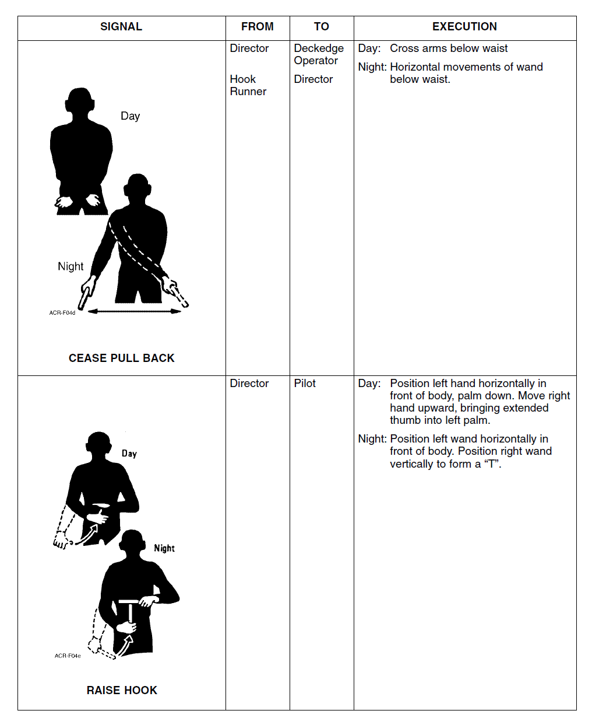
Bu sayfada iki işaret vardır: CEASE PULL BACK ve RAISE HOOK. İkisinin çiziminde de gündüz (Day) ve gece (Night) hâli ayrı figürlerle gösterilir.
- B-8.01Figure B-8 Flight Deck Signals 8
CEASE PULL BACK (geri çekmeyi kes)
Bu işaretin iki veren–alan çifti vardır, uygulama ikisinde de aynıdır:
- Director → Deckedge Operator
- Hook Runner → Director
Uygulama:
- Gündüz: Kollar belin altında çaprazlanır.
- Gece: Wand belin altında yatay olarak hareket ettirilir (wand rengi belirtilmemiştir).
- B-8.F1[Figure B-8] SIGNAL: CEASE PULL BACK | FROM: Director | TO: Deckedge Operator || FROM: Hook Runner | TO: Director | Day: Cross arms below waist | Night: Horizontal movements of wand below waist.
Karıştırmayın: FOUL DECK'te kollar baş üstünde çaprazlanır (Flight Deck Officer / Director → Arresting Gear Officer); CEASE PULL BACK'te kollar belin altında çaprazlanır.
- B-7.F2[Figure B-7] SIGNAL: FOUL DECK | FROM: Flight Deck Officer/Director | TO: Arresting Gear Officer | Day: Cross arms overhead, fists clenched. | Night: Crossed AMBER wands held overhead
- B-8.F1[Figure B-8] SIGNAL: CEASE PULL BACK | FROM: Director | TO: Deckedge Operator || FROM: Hook Runner | TO: Director | Day: Cross arms below waist | Night: Horizontal movements of wand below waist.
RAISE HOOK (kancayı kaldır)
Director → Pilot
- Gündüz: Sol el vücudun önünde yatay, avuç aşağı tutulur. Sağ el yukarı doğru hareket ettirilir ve uzatılmış başparmak sol avuca getirilir.
- Gece: Sol wand vücudun önünde yatay tutulur; sağ wand dikey tutularak bir "T" oluşturulur.
- B-8.F2[Figure B-8] SIGNAL: RAISE HOOK | FROM: Director | TO: Pilot | Day: Position left hand horizontally in front of body, palm down. Move right hand upward, bringing extended thumb into left palm. | Night: Position left wand horizontally in front of body. Position right wand vertically to form a “T”.
Bölüm 2'deki Carrier Arrestment metninde (2-17.18 – 2-17.20) uçak durduktan sonra yellow shirt'ün power back, ardından "brake release and a pull-back, followed by a stop signal and hook up signal" verdiği, pull-back'in telin kancadan kurtulmasını sağladığı yazılır. Ek B'deki adlar farklıdır: kancayı kaldırma işaretinin adı RAISE HOOK'tur ("hook up" değil). Geri çekmeyi durduran CEASE PULL BACK ise pilota değil, Director → Deckedge Operator ve Hook Runner → Director olarak verilir; Bölüm 2'deki pilota yönelik "stop signal" bu parçanın sayfalarında (B-7 – B-11) yer almaz. Ek B'de PULL BACK'i pilota veren kişi "Director" olarak yazılır, Bölüm 2 "yellow shirt" der. Ek B'de fren bırakma (brake release) işareti bu sayfalarda yoktur.
- B-7.F3[Figure B-7] SIGNAL: PULL BACK | FROM: Hook Runner | TO: Director | Day: Make fore-to-aft sweeping motion with arms extended downward, palms aft. | Night: Same motion except with RED stubby wand. || FROM: Director | TO: Pilot, Deckedge Operator | Day: Make fore-to-aft sweeping motion with arms extended, palms forward. | Night: Same motion except with two AMBER wands.
- B-8.F1[Figure B-8] SIGNAL: CEASE PULL BACK | FROM: Director | TO: Deckedge Operator || FROM: Hook Runner | TO: Director | Day: Cross arms below waist | Night: Horizontal movements of wand below waist.
- B-8.F2[Figure B-8] SIGNAL: RAISE HOOK | FROM: Director | TO: Pilot | Day: Position left hand horizontally in front of body, palm down. Move right hand upward, bringing extended thumb into left palm. | Night: Position left wand horizontally in front of body. Position right wand vertically to form a “T”.
Bölüm soruları
0 / 2CEASE PULL BACK işaretinin veren → alan çiftleri hangileridir?
Tabloda iki FROM/TO çifti vardır, uygulama aynıdır: gündüz kollar belin altında çapraz, gece wand belin altında yatay hareket.
Kaynak: s. B-8 (B-8.F1)
RAISE HOOK işareti gündüz nasıl verilir?
İkinci şık LOWER HOOK'tur (avuç yukarı, sağ el aşağı). RAISE HOOK: Director → Pilot.
Kaynak: s. B-8, B-9 (B-8.F2, B-9.F1)
B-9Kancayı indirme ve tel işaretleri (Lower Hook, Wire Clear, Wire Retract)
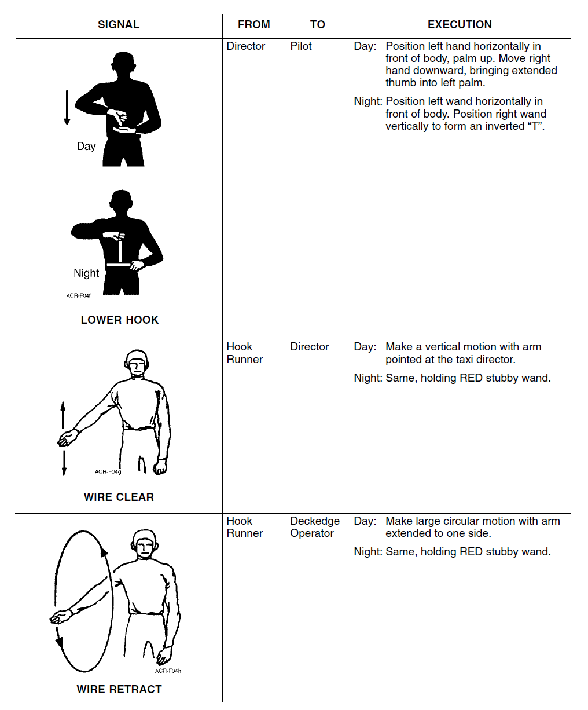
Bu sayfada üç işaret vardır: LOWER HOOK (çiziminde gündüz ve gece hâli ayrı), WIRE CLEAR ve WIRE RETRACT.
- B-9.01Figure B-9 Flight Deck Signals 9
LOWER HOOK (kancayı indir)
Director → Pilot
- Gündüz: Sol el vücudun önünde yatay, avuç yukarı tutulur. Sağ el aşağı doğru hareket ettirilir ve uzatılmış başparmak sol avuca getirilir.
- Gece: Sol wand vücudun önünde yatay tutulur; sağ wand dikey tutularak ters bir "T" (inverted "T") oluşturulur.
- B-9.F1[Figure B-9] SIGNAL: LOWER HOOK | FROM: Director | TO: Pilot | Day: Position left hand horizontally in front of body, palm up. Move right hand downward, bringing extended thumb into left palm. | Night: Position left wand horizontally in front of body. Position right wand vertically to form an inverted “T”.
RAISE HOOK ile LOWER HOOK birbirinin aynası gibidir:
| RAISE HOOK (s. B-8) | LOWER HOOK (s. B-9) | |
|---|---|---|
| Veren → alan | Director → Pilot | Director → Pilot |
| Gündüz, sol el | Vücudun önünde yatay, avuç aşağı | Vücudun önünde yatay, avuç yukarı |
| Gündüz, sağ el | Yukarı hareket, başparmak sol avuca | Aşağı hareket, başparmak sol avuca |
| Gece | Sol wand yatay, sağ wand dikey: "T" | Sol wand yatay, sağ wand dikey: ters "T" |
- B-8.F2[Figure B-8] SIGNAL: RAISE HOOK | FROM: Director | TO: Pilot | Day: Position left hand horizontally in front of body, palm down. Move right hand upward, bringing extended thumb into left palm. | Night: Position left wand horizontally in front of body. Position right wand vertically to form a “T”.
- B-9.F1[Figure B-9] SIGNAL: LOWER HOOK | FROM: Director | TO: Pilot | Day: Position left hand horizontally in front of body, palm up. Move right hand downward, bringing extended thumb into left palm. | Night: Position left wand horizontally in front of body. Position right wand vertically to form an inverted “T”.
WIRE CLEAR (tel serbest)
Hook Runner → Director
- Gündüz: Taxi director'ı gösteren kolla dikey bir hareket yapılır.
- Gece: Aynı hareket, RED stubby wand tutularak.
- B-9.F2[Figure B-9] SIGNAL: WIRE CLEAR | FROM: Hook Runner | TO: Director | Day: Make a vertical motion with arm pointed at the taxi director. | Night: Same, holding RED stubby wand.
WIRE RETRACT (teli geri topla)
Hook Runner → Deckedge Operator
- Gündüz: Bir yana uzatılmış kolla büyük dairesel bir hareket yapılır.
- Gece: Aynı hareket, RED stubby wand tutularak.
- B-9.F3[Figure B-9] SIGNAL: WIRE RETRACT | FROM: Hook Runner | TO: Deckedge Operator | Day: Make large circular motion with arm extended to one side. | Night: Same, holding RED stubby wand.
Hook Runner'ın işaretleri (özet)
Bu parçada Hook Runner dört işaret verir. Gece RED stubby wand PULL BACK, WIRE CLEAR ve WIRE RETRACT'ta açıkça belirtilir; CEASE PULL BACK'te yalnızca "wand" denir.
| İşaret | Hook Runner → | Gündüz | Gece |
|---|---|---|---|
| PULL BACK | Director | Kollar aşağı uzatılmış, avuçlar kıça; ileriden geriye süpürme | RED stubby wand ile aynı hareket |
| CEASE PULL BACK | Director | Kollar belin altında çapraz | Wand belin altında yatay hareket |
| WIRE CLEAR | Director | Taxi director'ı gösteren kolla dikey hareket | RED stubby wand ile aynı |
| WIRE RETRACT | Deckedge Operator | Yana uzatılmış kolla büyük daire | RED stubby wand ile aynı |
- B-7.F3[Figure B-7] SIGNAL: PULL BACK | FROM: Hook Runner | TO: Director | Day: Make fore-to-aft sweeping motion with arms extended downward, palms aft. | Night: Same motion except with RED stubby wand. || FROM: Director | TO: Pilot, Deckedge Operator | Day: Make fore-to-aft sweeping motion with arms extended, palms forward. | Night: Same motion except with two AMBER wands.
- B-8.F1[Figure B-8] SIGNAL: CEASE PULL BACK | FROM: Director | TO: Deckedge Operator || FROM: Hook Runner | TO: Director | Day: Cross arms below waist | Night: Horizontal movements of wand below waist.
- B-9.F2[Figure B-9] SIGNAL: WIRE CLEAR | FROM: Hook Runner | TO: Director | Day: Make a vertical motion with arm pointed at the taxi director. | Night: Same, holding RED stubby wand.
- B-9.F3[Figure B-9] SIGNAL: WIRE RETRACT | FROM: Hook Runner | TO: Deckedge Operator | Day: Make large circular motion with arm extended to one side. | Night: Same, holding RED stubby wand.
Bölüm soruları
0 / 3Gece sol wand vücudun önünde yatay, sağ wand dikey tutularak ters bir "T" (inverted "T") oluşturuluyor. Bu hangi işarettir?
RAISE HOOK gece "T", LOWER HOOK gece ters "T" ile verilir; ikisi de Director → Pilot.
Kaynak: s. B-8, B-9 (B-8.F2, B-9.F1)
WIRE CLEAR işaretini kim kime verir ve gündüz nasıl uygulanır?
WIRE CLEAR: "Make a vertical motion with arm pointed at the taxi director." Gece aynı, RED stubby wand ile.
Kaynak: s. B-9 (B-9.F2)
WIRE RETRACT işaretini Hook Runner kime verir?
WIRE RETRACT: Hook Runner → Deckedge Operator; gündüz bir yana uzatılmış kolla büyük dairesel hareket, gece aynı hareket RED stubby wand ile.
Kaynak: s. B-9 (B-9.F3)
B-10Tiller bar ve burun tekeri dümenlemesi, bağlama ve ters itki taksisi
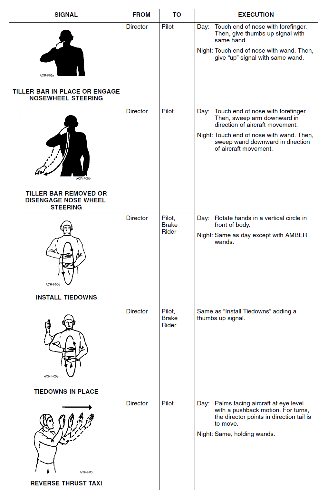
Bu sayfada beş işaret vardır: TILLER BAR IN PLACE OR ENGAGE NOSEWHEEL STEERING, TILLER BAR REMOVED OR DISENGAGE NOSE WHEEL STEERING, INSTALL TIEDOWNS, TIEDOWNS IN PLACE ve REVERSE THRUST TAXI. Hepsini Director verir.
- B-10.01Figure B-10 Flight Deck Signals 10
TILLER BAR IN PLACE OR ENGAGE NOSEWHEEL STEERING
(Tiller bar yerinde ya da burun tekeri dümenlemesini devreye al) — Director → Pilot
- Gündüz: Burnun ucuna işaret parmağıyla dokunulur. Ardından aynı elle thumbs up (başparmak yukarı) işareti verilir.
- Gece: Burnun ucuna wand'la dokunulur. Ardından aynı wand'la "up" (yukarı) işareti verilir.
- B-10.F1[Figure B-10] SIGNAL: TILLER BAR IN PLACE OR ENGAGE NOSEWHEEL STEERING | FROM: Director | TO: Pilot | Day: Touch end of nose with forefinger. Then, give thumbs up signal with same hand. | Night: Touch end of nose with wand. Then, give “up” signal with same wand.
TILLER BAR REMOVED OR DISENGAGE NOSE WHEEL STEERING
(Tiller bar çıkarıldı ya da burun tekeri dümenlemesini ayır) — Director → Pilot
- Gündüz: Burnun ucuna işaret parmağıyla dokunulur. Ardından kol uçağın hareket yönünde aşağı doğru süpürülür.
- Gece: Burnun ucuna wand'la dokunulur. Ardından wand uçağın hareket yönünde aşağı doğru süpürülür.
- B-10.F2[Figure B-10] SIGNAL: TILLER BAR REMOVED OR DISENGAGE NOSE WHEEL STEERING | FROM: Director | TO: Pilot | Day: Touch end of nose with forefinger. Then, sweep arm downward in direction of aircraft movement. | Night: Touch end of nose with wand. Then, sweep wand downward in direction of aircraft movement.
İki işaret de burna dokunmayla başlar; ayırt eden ikinci harekettir: yukarı (thumbs up / "up") = tiller bar yerinde, NWS devreye al; hareket yönünde aşağı süpürme = tiller bar çıkarıldı, NWS'i ayır.
- B-10.F1[Figure B-10] SIGNAL: TILLER BAR IN PLACE OR ENGAGE NOSEWHEEL STEERING | FROM: Director | TO: Pilot | Day: Touch end of nose with forefinger. Then, give thumbs up signal with same hand. | Night: Touch end of nose with wand. Then, give “up” signal with same wand.
- B-10.F2[Figure B-10] SIGNAL: TILLER BAR REMOVED OR DISENGAGE NOSE WHEEL STEERING | FROM: Director | TO: Pilot | Day: Touch end of nose with forefinger. Then, sweep arm downward in direction of aircraft movement. | Night: Touch end of nose with wand. Then, sweep wand downward in direction of aircraft movement.
Burun tekeri dümenlemesini ayırma işareti belgede iki farklı biçimde anlatılıyor. Bölüm 2'deki katapult işaret listesinde (2-7.02, "(b) Disengage nose wheel steering") director sağ işaret parmağıyla burnunu gösterir ve "presents a lateral wave with open palm of the left hand at shoulder height" (omuz hizasında sol açık avuçla yana el sallama). Ek B'de (s. B-10) ise burnun ucuna dokunduktan sonra "sweep arm downward in direction of aircraft movement" (kolu uçağın hareket yönünde aşağı süpürme) denir. Burna dokunma ortak, ikinci hareket farklıdır; Ek B başlığı ayrıca tiller bar'ın çıkarılmasını da kapsar. Bunun yanında Bölüm 2'nin NWS arızası metni (2-34.27, 2-35.02) "tow bar" terimini kullanır, Ek B ise "tiller bar" der; ikisinin aynı ekipman olup olmadığı belgede açıklanmaz. Hangi işaretin hangi durumda kullanılacağını güncel NATOPS / gemi prosedüründen doğrulayın.
- B-10.F1[Figure B-10] SIGNAL: TILLER BAR IN PLACE OR ENGAGE NOSEWHEEL STEERING | FROM: Director | TO: Pilot | Day: Touch end of nose with forefinger. Then, give thumbs up signal with same hand. | Night: Touch end of nose with wand. Then, give “up” signal with same wand.
- B-10.F2[Figure B-10] SIGNAL: TILLER BAR REMOVED OR DISENGAGE NOSE WHEEL STEERING | FROM: Director | TO: Pilot | Day: Touch end of nose with forefinger. Then, sweep arm downward in direction of aircraft movement. | Night: Touch end of nose with wand. Then, sweep wand downward in direction of aircraft movement.
INSTALL TIEDOWNS (bağlama zincirlerini tak)
Director → Pilot, Brake Rider
- Gündüz: Eller vücudun önünde dikey bir daire çizecek şekilde döndürülür.
- Gece: Gündüzle aynı, ancak AMBER wand'larla.
- B-10.F3[Figure B-10] SIGNAL: INSTALL TIEDOWNS | FROM: Director | TO: Pilot, Brake Rider | Day: Rotate hands in a vertical circle in front of body. | Night: Same as day except with AMBER wands.
TIEDOWNS IN PLACE (bağlama zincirleri takıldı)
Director → Pilot, Brake Rider
- Uygulama: "Install Tiedowns" işaretiyle aynıdır, buna bir thumbs up işareti eklenir. (Bu satırda Day / Night ayrımı yapılmamıştır.)
- B-10.F4[Figure B-10] SIGNAL: TIEDOWNS IN PLACE | FROM: Director | TO: Pilot, Brake Rider | EXECUTION: Same as “Install Tiedowns” adding a thumbs up signal.
REVERSE THRUST TAXI (ters itkiyle taksi)
Director → Pilot
- Gündüz: Avuçlar uçağa dönük, göz hizasında, itme (pushback) hareketiyle. Dönüşlerde director, kuyruğun gitmesi gereken yönü gösterir.
- Gece: Aynı hareket, wand'lar tutularak.
- B-10.F5[Figure B-10] SIGNAL: REVERSE THRUST TAXI | FROM: Director | TO: Pilot | Day: Palms facing aircraft at eye level with a pushback motion. For turns, the director points in direction tail is to move. | Night: Same, holding wands.
Bölüm soruları
0 / 4Director burnunun ucuna işaret parmağıyla dokunuyor, ardından kolunu uçağın hareket yönünde aşağı doğru süpürüyor. Bu hangi işarettir?
Burna dokunduktan sonra thumbs up (gece "up" işareti) verilirse TILLER BAR IN PLACE OR ENGAGE NOSEWHEEL STEERING'dir. Bölüm 2'deki (2-7.02) disengage NWS tarifi farklıdır (kaynak notu).
Kaynak: s. B-10 (B-10.F1, B-10.F2)
INSTALL TIEDOWNS işaretini kim alır ve gece nasıl verilir?
INSTALL TIEDOWNS: Director → Pilot, Brake Rider; gündüz "Rotate hands in a vertical circle in front of body", gece "Same as day except with AMBER wands".
Kaynak: s. B-10 (B-10.F3)
TIEDOWNS IN PLACE işareti nasıl verilir?
"Same as 'Install Tiedowns' adding a thumbs up signal." Director → Pilot, Brake Rider.
Kaynak: s. B-10 (B-10.F4)
REVERSE THRUST TAXI işaretinde dönüşler nasıl gösterilir?
Gündüz: avuçlar uçağa dönük, göz hizasında, pushback hareketi; "For turns, the director points in direction tail is to move." Gece aynı, wand'larla.
Kaynak: s. B-10 (B-10.F5)
B-11Yakıt ikmali ve yakıt miktarı işaretleri (Refueling, Fuel Quantity Signals)
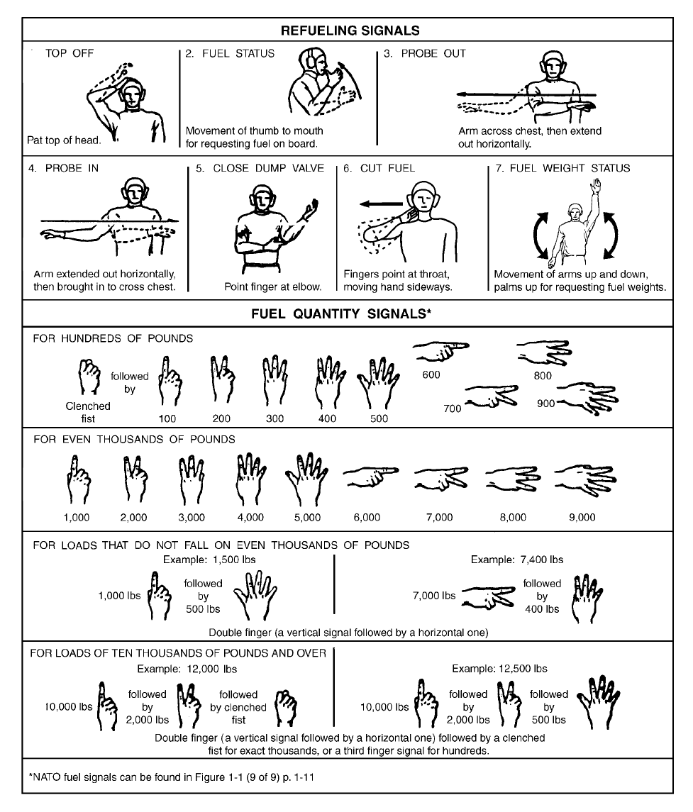
Bu sayfanın düzeni diğerlerinden farklıdır: FROM / TO ve Day / Night sütunları yoktur. Üstte numaralı yedi panelden oluşan REFUELING SIGNALS (yakıt ikmali işaretleri), altta dört satırlık FUEL QUANTITY SIGNALS (yakıt miktarı işaretleri; başlıkta yıldız işareti vardır) ve en altta bu yıldıza bağlı bir dipnot bulunur. Her ikmal panelinde işaretin adı, çizimi ve kısa açıklaması vardır.
- B-11.01Figure B-11 Flight Deck Signals 11
Yakıt ikmali işaretleri (Refueling Signals)
| No | İşaret | Hareket ve anlamı |
|---|---|---|
| (1) | TOP OFF | Başın tepesine hafifçe vurulur (pat top of head). |
| 2 | FUEL STATUS | Başparmak ağza doğru hareket ettirilir: uçaktaki yakıt miktarı (fuel on board) istenir. |
| 3 | PROBE OUT | Kol göğsün önünden çaprazlanır, sonra yatay olarak dışarı uzatılır. |
| 4 | PROBE IN | Kol yatay olarak dışarı uzatılır, sonra içeri alınıp göğsün önünde çaprazlanır. |
| 5 | CLOSE DUMP VALVE | Parmakla dirsek gösterilir. |
| 6 | CUT FUEL | Parmaklar boğazı gösterir, el yana doğru hareket ettirilir. |
| 7 | FUEL WEIGHT STATUS | Kollar avuçlar yukarı dönük olarak aşağı yukarı hareket ettirilir: yakıt ağırlıkları (fuel weights) istenir. |
- B-11.F1[Figure B-11] REFUELING SIGNALS — TOP OFF (item number not printed legibly; only a faint mark precedes it, the other items are numbered 2.–7.): Pat top of head.
- B-11.F2[Figure B-11] REFUELING SIGNALS — 2. FUEL STATUS: Movement of thumb to mouth for requesting fuel on board.
- B-11.F3[Figure B-11] REFUELING SIGNALS — 3. PROBE OUT: Arm across chest, then extend out horizontally.
- B-11.F4[Figure B-11] REFUELING SIGNALS — 4. PROBE IN: Arm extended out horizontally, then brought in to cross chest.
- B-11.F5[Figure B-11] REFUELING SIGNALS — 5. CLOSE DUMP VALVE: Point finger at elbow.
- B-11.F6[Figure B-11] REFUELING SIGNALS — 6. CUT FUEL: Fingers point at throat, moving hand sideways.
- B-11.F7[Figure B-11] REFUELING SIGNALS — 7. FUEL WEIGHT STATUS: Movement of arms up and down, palms up for requesting fuel weights.
PROBE OUT ile PROBE IN aynı hareketin tersidir: OUT'ta kol göğüsten dışarı açılır, IN'de dışarıdan göğse getirilir. FUEL STATUS (başparmak ağza) uçaktaki yakıtı, FUEL WEIGHT STATUS (kollar aşağı yukarı, avuçlar yukarı) yakıt ağırlıklarını sorar.
- B-11.F2[Figure B-11] REFUELING SIGNALS — 2. FUEL STATUS: Movement of thumb to mouth for requesting fuel on board.
- B-11.F3[Figure B-11] REFUELING SIGNALS — 3. PROBE OUT: Arm across chest, then extend out horizontally.
- B-11.F4[Figure B-11] REFUELING SIGNALS — 4. PROBE IN: Arm extended out horizontally, then brought in to cross chest.
- B-11.F7[Figure B-11] REFUELING SIGNALS — 7. FUEL WEIGHT STATUS: Movement of arms up and down, palms up for requesting fuel weights.
İkmal panellerinden ilki "TOP OFF" numarasız basılmıştır (yerinde yalnızca silik bir nokta vardır); diğer paneller "2." – "7." diye numaralıdır. Derste sıraya göre (1) olarak gösterildi.
- B-11.F1[Figure B-11] REFUELING SIGNALS — TOP OFF (item number not printed legibly; only a faint mark precedes it, the other items are numbered 2.–7.): Pat top of head.
Yakıt miktarı işaretleri (Fuel Quantity Signals)
El şekilleri (çizimlere göre): 1–5 için el dikey tutulur ve 1–5 parmak kaldırılır; 6–9 için el yatay tutulur ve 1–4 parmak uzatılır.
- Yüzler (FOR HUNDREDS OF POUNDS): Önce yumruk (clenched fist), ardından 100 – 900 işareti verilir.
- Tam binler (FOR EVEN THOUSANDS OF POUNDS): Aynı el şekilleri yumruksuz olarak 1.000 – 9.000 lbs'i gösterir.
- B-11.F8[Figure B-11] FUEL QUANTITY SIGNALS* — FOR HUNDREDS OF POUNDS: Clenched fist followed by 100, 200, 300, 400, 500, 600, 700, 800, 900 (drawings: 100–500 = one to five fingers raised vertically; 600–900 = hand held horizontally with one to four fingers extended).
- B-11.F9[Figure B-11] FUEL QUANTITY SIGNALS* — FOR EVEN THOUSANDS OF POUNDS: 1,000, 2,000, 3,000, 4,000, 5,000, 6,000, 7,000, 8,000, 9,000 (drawings: 1,000–5,000 = one to five fingers raised vertically; 6,000–9,000 = hand held horizontally with one to four fingers extended).
| El şekli (çizim) | Tek başına: tam binler | Yumruktan sonra: yüzler |
|---|---|---|
| Dikey, 1 parmak | 1.000 lbs | 100 lbs |
| Dikey, 2 parmak | 2.000 lbs | 200 lbs |
| Dikey, 3 parmak | 3.000 lbs | 300 lbs |
| Dikey, 4 parmak | 4.000 lbs | 400 lbs |
| Dikey, 5 parmak | 5.000 lbs | 500 lbs |
| Yatay, 1 parmak | 6.000 lbs | 600 lbs |
| Yatay, 2 parmak | 7.000 lbs | 700 lbs |
| Yatay, 3 parmak | 8.000 lbs | 800 lbs |
| Yatay, 4 parmak | 9.000 lbs | 900 lbs |
- B-11.F8[Figure B-11] FUEL QUANTITY SIGNALS* — FOR HUNDREDS OF POUNDS: Clenched fist followed by 100, 200, 300, 400, 500, 600, 700, 800, 900 (drawings: 100–500 = one to five fingers raised vertically; 600–900 = hand held horizontally with one to four fingers extended).
- B-11.F9[Figure B-11] FUEL QUANTITY SIGNALS* — FOR EVEN THOUSANDS OF POUNDS: 1,000, 2,000, 3,000, 4,000, 5,000, 6,000, 7,000, 8,000, 9,000 (drawings: 1,000–5,000 = one to five fingers raised vertically; 6,000–9,000 = hand held horizontally with one to four fingers extended).
Tam bine denk gelmeyen yükler (FOR LOADS THAT DO NOT FALL ON EVEN THOUSANDS OF POUNDS): İki işaret art arda verilir: önce binler, sonra yüzler. Belge bunu "Double finger (a vertical signal followed by a horizontal one)" diye adlandırır.
- Örnek 1.500 lbs = 1.000 lbs, ardından 500 lbs.
- Örnek 7.400 lbs = 7.000 lbs, ardından 400 lbs.
- B-11.F10[Figure B-11] FUEL QUANTITY SIGNALS* — FOR LOADS THAT DO NOT FALL ON EVEN THOUSANDS OF POUNDS: Example: 1,500 lbs = 1,000 lbs followed by 500 lbs. Example: 7,400 lbs = 7,000 lbs followed by 400 lbs. Double finger (a vertical signal followed by a horizontal one) (drawings: 1,000 lbs = one finger vertical, 500 lbs = five fingers vertical; 7,000 lbs = two fingers horizontal, 400 lbs = four fingers vertical).
10.000 lbs ve üstü (FOR LOADS OF TEN THOUSANDS OF POUNDS AND OVER): "Double finger" işaretinin ardından tam binler için yumruk (clenched fist), yüzler için üçüncü bir parmak işareti verilir.
- Örnek 12.000 lbs = 10.000 lbs, ardından 2.000 lbs, ardından yumruk.
- Örnek 12.500 lbs = 10.000 lbs, ardından 2.000 lbs, ardından 500 lbs.
- B-11.F11[Figure B-11] FUEL QUANTITY SIGNALS* — FOR LOADS OF TEN THOUSANDS OF POUNDS AND OVER: Example: 12,000 lbs = 10,000 lbs followed by 2,000 lbs followed by clenched fist. Example: 12,500 lbs = 10,000 lbs followed by 2,000 lbs followed by 500 lbs. Double finger (a vertical signal followed by a horizontal one) followed by a clenched fist for exact thousands, or a third finger signal for hundreds. (drawings: 10,000 lbs = one finger vertical; 2,000 lbs = two fingers vertical; 500 lbs = five fingers vertical).
Yumruğun yeri değere göre değişir: yüzlerde (1.000 lbs'in altı) yumruk önce gelir; 10.000 lbs ve üstündeki tam binlerde en sona eklenir.
- B-11.F8[Figure B-11] FUEL QUANTITY SIGNALS* — FOR HUNDREDS OF POUNDS: Clenched fist followed by 100, 200, 300, 400, 500, 600, 700, 800, 900 (drawings: 100–500 = one to five fingers raised vertically; 600–900 = hand held horizontally with one to four fingers extended).
- B-11.F11[Figure B-11] FUEL QUANTITY SIGNALS* — FOR LOADS OF TEN THOUSANDS OF POUNDS AND OVER: Example: 12,000 lbs = 10,000 lbs followed by 2,000 lbs followed by clenched fist. Example: 12,500 lbs = 10,000 lbs followed by 2,000 lbs followed by 500 lbs. Double finger (a vertical signal followed by a horizontal one) followed by a clenched fist for exact thousands, or a third finger signal for hundreds. (drawings: 10,000 lbs = one finger vertical; 2,000 lbs = two fingers vertical; 500 lbs = five fingers vertical).
Açıklama metni "a vertical signal followed by a horizontal one" (önce dikey, sonra yatay işaret) der. Örnek çizimlerde ise 1.500 lbs'te iki işaret de dikey (1 parmak, sonra 5 parmak), 7.400 lbs'te önce yatay (7.000: 2 parmak), sonra dikey (400: 4 parmak), 12.000 / 12.500 lbs'te 10.000 ve 2.000 lbs işaretleri de dikeydir. Hiçbir örnek "önce dikey, sonra yatay" sırasını göstermez; ifadenin anlamı belgede açıklanmıyor.
- B-11.F10[Figure B-11] FUEL QUANTITY SIGNALS* — FOR LOADS THAT DO NOT FALL ON EVEN THOUSANDS OF POUNDS: Example: 1,500 lbs = 1,000 lbs followed by 500 lbs. Example: 7,400 lbs = 7,000 lbs followed by 400 lbs. Double finger (a vertical signal followed by a horizontal one) (drawings: 1,000 lbs = one finger vertical, 500 lbs = five fingers vertical; 7,000 lbs = two fingers horizontal, 400 lbs = four fingers vertical).
- B-11.F11[Figure B-11] FUEL QUANTITY SIGNALS* — FOR LOADS OF TEN THOUSANDS OF POUNDS AND OVER: Example: 12,000 lbs = 10,000 lbs followed by 2,000 lbs followed by clenched fist. Example: 12,500 lbs = 10,000 lbs followed by 2,000 lbs followed by 500 lbs. Double finger (a vertical signal followed by a horizontal one) followed by a clenched fist for exact thousands, or a third finger signal for hundreds. (drawings: 10,000 lbs = one finger vertical; 2,000 lbs = two fingers vertical; 500 lbs = five fingers vertical).
FUEL QUANTITY SIGNALS başlığındaki yıldızın dipnotu: "NATO fuel signals can be found in Figure 1-1 (9 of 9) p. 1-11". Bu belgede ise Figure 1-1 "Flight Deck Jersey Chart"tır (forma renkleri, s. 1-5; birim 1-5.04) ve s. 1-11 FLOLS / IFLOLS'u anlatır (1-11.01 ve devamı). Belgenin metin birimlerinde NATO yakıt işaretleri bulunmuyor; atıf bu belgeyle örtüşmüyor. NATO yakıt işaretleri için atıfta bulunulan asıl kaynağı ayrıca bulun.
- B-11.F12[Figure B-11] Footnote: *NATO fuel signals can be found in Figure 1-1 (9 of 9) p. 1-11
Tanıma alıştırması
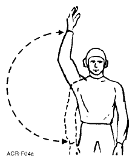
Bu hangi işaret?
Çizimler s. B-7 – B-11'deki tablolardan kırpılmıştır; işaretin basılı adı gizlenmiştir. Yakıt miktarı modunda el şekilleri "FOR EVEN THOUSANDS OF POUNDS" satırından alınmıştır; aynı el şekli önce yumruk (clenched fist) verildiğinde yüzleri gösterir.
- B-7.F1[Figure B-7] SIGNAL: CLEAR DECK | FROM: Flight Deck Officer/Director | TO: Arresting Gear Officer | Day: Sweep arm from overhead position to side position and return. | Night: Same as day except with AMBER wand.
- B-7.F2[Figure B-7] SIGNAL: FOUL DECK | FROM: Flight Deck Officer/Director | TO: Arresting Gear Officer | Day: Cross arms overhead, fists clenched. | Night: Crossed AMBER wands held overhead
- B-7.F3[Figure B-7] SIGNAL: PULL BACK | FROM: Hook Runner | TO: Director | Day: Make fore-to-aft sweeping motion with arms extended downward, palms aft. | Night: Same motion except with RED stubby wand. || FROM: Director | TO: Pilot, Deckedge Operator | Day: Make fore-to-aft sweeping motion with arms extended, palms forward. | Night: Same motion except with two AMBER wands.
- B-8.F1[Figure B-8] SIGNAL: CEASE PULL BACK | FROM: Director | TO: Deckedge Operator || FROM: Hook Runner | TO: Director | Day: Cross arms below waist | Night: Horizontal movements of wand below waist.
- B-8.F2[Figure B-8] SIGNAL: RAISE HOOK | FROM: Director | TO: Pilot | Day: Position left hand horizontally in front of body, palm down. Move right hand upward, bringing extended thumb into left palm. | Night: Position left wand horizontally in front of body. Position right wand vertically to form a “T”.
- B-9.F1[Figure B-9] SIGNAL: LOWER HOOK | FROM: Director | TO: Pilot | Day: Position left hand horizontally in front of body, palm up. Move right hand downward, bringing extended thumb into left palm. | Night: Position left wand horizontally in front of body. Position right wand vertically to form an inverted “T”.
- B-9.F2[Figure B-9] SIGNAL: WIRE CLEAR | FROM: Hook Runner | TO: Director | Day: Make a vertical motion with arm pointed at the taxi director. | Night: Same, holding RED stubby wand.
- B-9.F3[Figure B-9] SIGNAL: WIRE RETRACT | FROM: Hook Runner | TO: Deckedge Operator | Day: Make large circular motion with arm extended to one side. | Night: Same, holding RED stubby wand.
- B-10.F1[Figure B-10] SIGNAL: TILLER BAR IN PLACE OR ENGAGE NOSEWHEEL STEERING | FROM: Director | TO: Pilot | Day: Touch end of nose with forefinger. Then, give thumbs up signal with same hand. | Night: Touch end of nose with wand. Then, give “up” signal with same wand.
- B-10.F2[Figure B-10] SIGNAL: TILLER BAR REMOVED OR DISENGAGE NOSE WHEEL STEERING | FROM: Director | TO: Pilot | Day: Touch end of nose with forefinger. Then, sweep arm downward in direction of aircraft movement. | Night: Touch end of nose with wand. Then, sweep wand downward in direction of aircraft movement.
- B-10.F3[Figure B-10] SIGNAL: INSTALL TIEDOWNS | FROM: Director | TO: Pilot, Brake Rider | Day: Rotate hands in a vertical circle in front of body. | Night: Same as day except with AMBER wands.
- B-10.F4[Figure B-10] SIGNAL: TIEDOWNS IN PLACE | FROM: Director | TO: Pilot, Brake Rider | EXECUTION: Same as “Install Tiedowns” adding a thumbs up signal.
- B-10.F5[Figure B-10] SIGNAL: REVERSE THRUST TAXI | FROM: Director | TO: Pilot | Day: Palms facing aircraft at eye level with a pushback motion. For turns, the director points in direction tail is to move. | Night: Same, holding wands.
- B-11.F1[Figure B-11] REFUELING SIGNALS — TOP OFF (item number not printed legibly; only a faint mark precedes it, the other items are numbered 2.–7.): Pat top of head.
- B-11.F2[Figure B-11] REFUELING SIGNALS — 2. FUEL STATUS: Movement of thumb to mouth for requesting fuel on board.
- B-11.F3[Figure B-11] REFUELING SIGNALS — 3. PROBE OUT: Arm across chest, then extend out horizontally.
- B-11.F4[Figure B-11] REFUELING SIGNALS — 4. PROBE IN: Arm extended out horizontally, then brought in to cross chest.
- B-11.F5[Figure B-11] REFUELING SIGNALS — 5. CLOSE DUMP VALVE: Point finger at elbow.
- B-11.F6[Figure B-11] REFUELING SIGNALS — 6. CUT FUEL: Fingers point at throat, moving hand sideways.
- B-11.F7[Figure B-11] REFUELING SIGNALS — 7. FUEL WEIGHT STATUS: Movement of arms up and down, palms up for requesting fuel weights.
- B-11.F8[Figure B-11] FUEL QUANTITY SIGNALS* — FOR HUNDREDS OF POUNDS: Clenched fist followed by 100, 200, 300, 400, 500, 600, 700, 800, 900 (drawings: 100–500 = one to five fingers raised vertically; 600–900 = hand held horizontally with one to four fingers extended).
- B-11.F9[Figure B-11] FUEL QUANTITY SIGNALS* — FOR EVEN THOUSANDS OF POUNDS: 1,000, 2,000, 3,000, 4,000, 5,000, 6,000, 7,000, 8,000, 9,000 (drawings: 1,000–5,000 = one to five fingers raised vertically; 6,000–9,000 = hand held horizontally with one to four fingers extended).
- B-11.F11[Figure B-11] FUEL QUANTITY SIGNALS* — FOR LOADS OF TEN THOUSANDS OF POUNDS AND OVER: Example: 12,000 lbs = 10,000 lbs followed by 2,000 lbs followed by clenched fist. Example: 12,500 lbs = 10,000 lbs followed by 2,000 lbs followed by 500 lbs. Double finger (a vertical signal followed by a horizontal one) followed by a clenched fist for exact thousands, or a third finger signal for hundreds. (drawings: 10,000 lbs = one finger vertical; 2,000 lbs = two fingers vertical; 500 lbs = five fingers vertical).
Bölüm soruları
0 / 7Yakıt ikmali işaretlerinden "parmakla dirseği göstermek" neyi ifade eder?
5. CLOSE DUMP VALVE: "Point finger at elbow." CUT FUEL'de parmaklar boğazı gösterir ve el yana hareket eder.
Kaynak: s. B-11 (B-11.F5, B-11.F6)
Uçaktaki yakıt miktarını (fuel on board) istemek için hangi işaret kullanılır?
FUEL WEIGHT STATUS ise yakıt ağırlıklarını ister: kollar avuçlar yukarı dönük olarak aşağı yukarı hareket ettirilir.
Kaynak: s. B-11 (B-11.F2, B-11.F7)
"Kol yatay olarak dışarı uzatılır, sonra içeri alınıp göğsün önünde çaprazlanır." Bu hangi işarettir?
PROBE OUT bunun tersidir: kol göğsün önünde çaprazlanır, sonra yatay olarak dışarı uzatılır. TOP OFF: başın tepesine hafifçe vurulur.
Kaynak: s. B-11 (B-11.F1, B-11.F3, B-11.F4)
Yakıt miktarı işaretlerinde önce yumruk (clenched fist), ardından yatay tutulan elde iki parmak gösteriliyor. Kaç lbs?
Yüzler: önce yumruk, sonra 100–900 işareti. Çizimlere göre yatay 1–4 parmak = 6–9; yumruksuz verilirse 7.000 lbs olurdu.
Kaynak: s. B-11 (B-11.F8, B-11.F9)
12.000 lbs yakıt nasıl gösterilir?
10.000 lbs ve üstü: "double finger"ın ardından tam binler için yumruk, yüzler için üçüncü parmak işareti (ör. 12.500 = 10.000 + 2.000 + 500).
Kaynak: s. B-11 (B-11.F11)
7.400 lbs yakıt nasıl gösterilir?
Tam bine denk gelmeyen yükler: önce binler, sonra yüzler (ör. 1.500 = 1.000 + 500). Belge bunu "Double finger (a vertical signal followed by a horizontal one)" diye adlandırır.
Kaynak: s. B-11 (B-11.F10)
Sayfa B-11'deki dipnot, NATO yakıt işaretleri için hangi yere atıf yapar?
Yıldızlı dipnot: "NATO fuel signals can be found in Figure 1-1 (9 of 9) p. 1-11". P-816'da Figure 1-1 forma renk çizelgesidir (s. 1-5), s. 1-11 FLOLS / IFLOLS'u anlatır.
Kaynak: s. B-11 (B-11.F12)
✦Bilgi kartları
Kartı çevirmek için tıklayın ya da boşluk tuşuna basın; ← → ile geçin. Aralıklı tekrar için aynı kartlar Anki destesi olarak da verilmiştir.